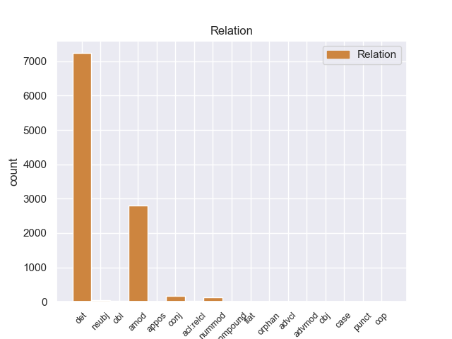
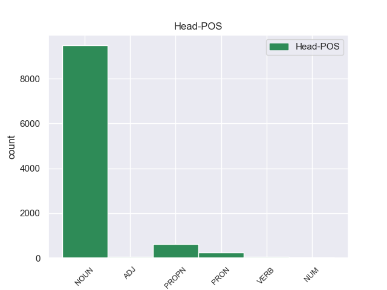
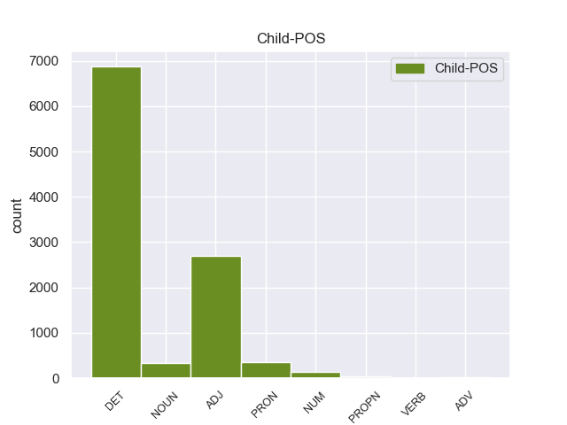

Distribution of features within this leaf



Agreement Rules sorted by frequency.
- When the dependent token is the determiner(det) of the head token, and the head token is NOUN and the dependent token is DET.
1 Αυτό _ _ _ _ 0 _ _ _
2 μπορεί _ _ _ _ 0 _ _ _
3 να _ _ _ _ 0 _ _ _
4 μην _ _ _ _ 0 _ _ _
5 οδηγήσει _ _ _ _ 0 _ _ _
6 σ _ _ _ _ 0 _ _ _
7 τη _ _ _ _ 0 _ _ _
8 λήξη _ _ _ _ 0 _ _ _
9 του _ _ _ _ 0 _ _ _
10 εν _ _ _ _ 0 _ _ _
11 λόγω _ _ _ _ 0 _ _ _
12 ζητήματος _ _ _ _ 0 _ _ _
13 αλλά _ _ _ _ 0 _ _ _
14 , _ _ _ _ 0 _ _ _
15 σ _ _ _ _ 0 _ _ _
16 τη _ _ _ _ 0 _ _ _
17 μορφή _ _ _ _ 0 _ _ _
18 υπό _ _ _ _ 0 _ _ _
19 την _ _ _ _ 0 _ _ _
20 οποία _ _ _ _ 0 _ _ _
21 την _ _ _ _ 0 _ _ _
22 λάβαμε _ _ _ _ 0 _ _ _
23 , _ _ _ _ 0 _ _ _
24 αυτή _ _ _ _ 0 _ _ _
25 η _ _ _ _ 0 _ _ _
26 αίτηση _ _ _ _ 0 _ _ _
27 άρσης _ _ _ _ 0 _ _ _
28 της _ _ _ _ 0 _ _ _
29 ασυλίας _ _ _ _ 0 _ _ _
30 ήταν _ _ _ _ 0 _ _ _
31 , _ _ _ _ 0 _ _ _
32 κατά _ _ _ _ 0 _ _ _
33 την _ _ _ _ 0 _ _ _
34 άποψη _ _ _ _ 0 _ _ _
35 της _ _ _ _ 0 _ _ _
36 Επιτροπής _ _ _ _ 0 _ _ _
37 Νομικών _ _ _ _ 0 _ _ _
38 Θεμάτων _ _ _ _ 0 _ _ _
39 , _ _ _ _ 0 _ _ _
40 απαράδεκτη _ _ _ _ 0 _ _ _
41 , _ _ _ _ 0 _ _ _
42 άποψη _ _ _ _ 0 _ _ _
43 την _ _ _ _ 0 _ _ _
44 οποία _ _ _ _ 0 _ _ _
45 συνιστώ _ _ _ _ 0 _ _ _
46 σ _ _ _ _ 0 _ _ _
47 το ο DET _ Case=Acc|Gender=Neut|Number=Sing 48 det _ _
48 Σώμα σώμα NOUN _ Case=Acc|Gender=Neut|Number=Sing 0 _ _ _
49 να _ _ _ _ 0 _ _ _
50 υιοθετήσει _ _ _ _ 0 _ _ _
51 . _ _ _ _ 0 _ _ _
1 Αυτό _ _ _ _ 0 _ _ _
2 μπορεί _ _ _ _ 0 _ _ _
3 να _ _ _ _ 0 _ _ _
4 μην _ _ _ _ 0 _ _ _
5 οδηγήσει _ _ _ _ 0 _ _ _
6 σ _ _ _ _ 0 _ _ _
7 τη _ _ _ _ 0 _ _ _
8 λήξη _ _ _ _ 0 _ _ _
9 του _ _ _ _ 0 _ _ _
10 εν _ _ _ _ 0 _ _ _
11 λόγω _ _ _ _ 0 _ _ _
12 ζητήματος _ _ _ _ 0 _ _ _
13 αλλά _ _ _ _ 0 _ _ _
14 , _ _ _ _ 0 _ _ _
15 σ _ _ _ _ 0 _ _ _
16 τη _ _ _ _ 0 _ _ _
17 μορφή _ _ _ _ 0 _ _ _
18 υπό _ _ _ _ 0 _ _ _
19 την _ _ _ _ 0 _ _ _
20 οποία _ _ _ _ 0 _ _ _
21 την _ _ _ _ 0 _ _ _
22 λάβαμε _ _ _ _ 0 _ _ _
23 , _ _ _ _ 0 _ _ _
24 αυτή _ _ _ _ 0 _ _ _
25 η _ _ _ _ 0 _ _ _
26 αίτηση _ _ _ _ 0 _ _ _
27 άρσης _ _ _ _ 0 _ _ _
28 της _ _ _ _ 0 _ _ _
29 ασυλίας _ _ _ _ 0 _ _ _
30 ήταν _ _ _ _ 0 _ _ _
31 , _ _ _ _ 0 _ _ _
32 κατά _ _ _ _ 0 _ _ _
33 την _ _ _ _ 0 _ _ _
34 άποψη _ _ _ _ 0 _ _ _
35 της _ _ _ _ 0 _ _ _
36 Επιτροπής _ _ _ _ 0 _ _ _
37 Νομικών νομικός ADJ _ Case=Gen|Gender=Fem|Number=Sing 38 amod _ _
38 Θεμάτων θεμάτω NOUN _ Case=Gen|Gender=Fem|Number=Sing 0 _ _ _
39 , _ _ _ _ 0 _ _ _
40 απαράδεκτη _ _ _ _ 0 _ _ _
41 , _ _ _ _ 0 _ _ _
42 άποψη _ _ _ _ 0 _ _ _
43 την _ _ _ _ 0 _ _ _
44 οποία _ _ _ _ 0 _ _ _
45 συνιστώ _ _ _ _ 0 _ _ _
46 σ _ _ _ _ 0 _ _ _
47 το _ _ _ _ 0 _ _ _
48 Σώμα _ _ _ _ 0 _ _ _
49 να _ _ _ _ 0 _ _ _
50 υιοθετήσει _ _ _ _ 0 _ _ _
51 . _ _ _ _ 0 _ _ _
1 Ο _ _ _ _ 0 _ _ _
2 Εισαγγελέας _ _ _ _ 0 _ _ _
3 σ _ _ _ _ 0 _ _ _
4 τη ο DET _ Case=Acc|Definite=Def|Gender=Fem|Number=Sing|PronType=Art 5 det _ _
5 Γαλλία Γαλλί PROPN _ Case=Acc|Gender=Fem|Number=Sing 0 _ _ _
6 έχει _ _ _ _ 0 _ _ _
7 το _ _ _ _ 0 _ _ _
8 δικαίωμα _ _ _ _ 0 _ _ _
9 να _ _ _ _ 0 _ _ _
10 εκπληρώνει _ _ _ _ 0 _ _ _
11 τα _ _ _ _ 0 _ _ _
12 καθήκοντά _ _ _ _ 0 _ _ _
13 του _ _ _ _ 0 _ _ _
14 βάσει _ _ _ _ 0 _ _ _
15 του _ _ _ _ 0 _ _ _
16 νόμου _ _ _ _ 0 _ _ _
17 και _ _ _ _ 0 _ _ _
18 το _ _ _ _ 0 _ _ _
19 Σώμα _ _ _ _ 0 _ _ _
20 δεν _ _ _ _ 0 _ _ _
21 λαμβάνει _ _ _ _ 0 _ _ _
22 θέση _ _ _ _ 0 _ _ _
23 σχετικά _ _ _ _ 0 _ _ _
24 με _ _ _ _ 0 _ _ _
25 αυτό _ _ _ _ 0 _ _ _
26 . _ _ _ _ 0 _ _ _
1 Αυτό _ _ _ _ 0 _ _ _
2 μπορεί _ _ _ _ 0 _ _ _
3 να _ _ _ _ 0 _ _ _
4 μην _ _ _ _ 0 _ _ _
5 οδηγήσει _ _ _ _ 0 _ _ _
6 σ _ _ _ _ 0 _ _ _
7 τη _ _ _ _ 0 _ _ _
8 λήξη _ _ _ _ 0 _ _ _
9 του _ _ _ _ 0 _ _ _
10 εν _ _ _ _ 0 _ _ _
11 λόγω _ _ _ _ 0 _ _ _
12 ζητήματος _ _ _ _ 0 _ _ _
13 αλλά _ _ _ _ 0 _ _ _
14 , _ _ _ _ 0 _ _ _
15 σ _ _ _ _ 0 _ _ _
16 τη _ _ _ _ 0 _ _ _
17 μορφή _ _ _ _ 0 _ _ _
18 υπό _ _ _ _ 0 _ _ _
19 την _ _ _ _ 0 _ _ _
20 οποία _ _ _ _ 0 _ _ _
21 την _ _ _ _ 0 _ _ _
22 λάβαμε _ _ _ _ 0 _ _ _
23 , _ _ _ _ 0 _ _ _
24 αυτή αυτή PRON _ Case=Acc|Gender=Fem|Number=Sing|Person=3|PronType=Dem 26 det _ _
25 η _ _ _ _ 0 _ _ _
26 αίτηση αίτηση NOUN _ Case=Acc|Gender=Fem|Number=Sing 0 _ _ _
27 άρσης _ _ _ _ 0 _ _ _
28 της _ _ _ _ 0 _ _ _
29 ασυλίας _ _ _ _ 0 _ _ _
30 ήταν _ _ _ _ 0 _ _ _
31 , _ _ _ _ 0 _ _ _
32 κατά _ _ _ _ 0 _ _ _
33 την _ _ _ _ 0 _ _ _
34 άποψη _ _ _ _ 0 _ _ _
35 της _ _ _ _ 0 _ _ _
36 Επιτροπής _ _ _ _ 0 _ _ _
37 Νομικών _ _ _ _ 0 _ _ _
38 Θεμάτων _ _ _ _ 0 _ _ _
39 , _ _ _ _ 0 _ _ _
40 απαράδεκτη _ _ _ _ 0 _ _ _
41 , _ _ _ _ 0 _ _ _
42 άποψη _ _ _ _ 0 _ _ _
43 την _ _ _ _ 0 _ _ _
44 οποία _ _ _ _ 0 _ _ _
45 συνιστώ _ _ _ _ 0 _ _ _
46 σ _ _ _ _ 0 _ _ _
47 το _ _ _ _ 0 _ _ _
48 Σώμα _ _ _ _ 0 _ _ _
49 να _ _ _ _ 0 _ _ _
50 υιοθετήσει _ _ _ _ 0 _ _ _
51 . _ _ _ _ 0 _ _ _
1 Αυτό _ _ _ _ 0 _ _ _
2 μπορεί _ _ _ _ 0 _ _ _
3 να _ _ _ _ 0 _ _ _
4 μην _ _ _ _ 0 _ _ _
5 οδηγήσει _ _ _ _ 0 _ _ _
6 σ _ _ _ _ 0 _ _ _
7 τη _ _ _ _ 0 _ _ _
8 λήξη _ _ _ _ 0 _ _ _
9 του _ _ _ _ 0 _ _ _
10 εν _ _ _ _ 0 _ _ _
11 λόγω _ _ _ _ 0 _ _ _
12 ζητήματος _ _ _ _ 0 _ _ _
13 αλλά _ _ _ _ 0 _ _ _
14 , _ _ _ _ 0 _ _ _
15 σ _ _ _ _ 0 _ _ _
16 τη _ _ _ _ 0 _ _ _
17 μορφή _ _ _ _ 0 _ _ _
18 υπό _ _ _ _ 0 _ _ _
19 την _ _ _ _ 0 _ _ _
20 οποία _ _ _ _ 0 _ _ _
21 την _ _ _ _ 0 _ _ _
22 λάβαμε _ _ _ _ 0 _ _ _
23 , _ _ _ _ 0 _ _ _
24 αυτή _ _ _ _ 0 _ _ _
25 η _ _ _ _ 0 _ _ _
26 αίτηση _ _ _ _ 0 _ _ _
27 άρσης _ _ _ _ 0 _ _ _
28 της _ _ _ _ 0 _ _ _
29 ασυλίας _ _ _ _ 0 _ _ _
30 ήταν _ _ _ _ 0 _ _ _
31 , _ _ _ _ 0 _ _ _
32 κατά _ _ _ _ 0 _ _ _
33 την _ _ _ _ 0 _ _ _
34 άποψη _ _ _ _ 0 _ _ _
35 της _ _ _ _ 0 _ _ _
36 Επιτροπής _ _ _ _ 0 _ _ _
37 Νομικών _ _ _ _ 0 _ _ _
38 Θεμάτων _ _ _ _ 0 _ _ _
39 , _ _ _ _ 0 _ _ _
40 απαράδεκτη _ _ _ _ 0 _ _ _
41 , _ _ _ _ 0 _ _ _
42 άποψη _ _ _ _ 0 _ _ _
43 την ο DET _ Case=Acc|Definite=Def|Gender=Fem|Number=Sing|PronType=Art 44 det _ _
44 οποία οποίος PRON _ Case=Nom|Gender=Fem|Number=Plur|Person=3|PronType=Rel 0 _ _ _
45 συνιστώ _ _ _ _ 0 _ _ _
46 σ _ _ _ _ 0 _ _ _
47 το _ _ _ _ 0 _ _ _
48 Σώμα _ _ _ _ 0 _ _ _
49 να _ _ _ _ 0 _ _ _
50 υιοθετήσει _ _ _ _ 0 _ _ _
51 . _ _ _ _ 0 _ _ _
1 Πρόκειται _ _ _ _ 0 _ _ _
2 για _ _ _ _ 0 _ _ _
3 την _ _ _ _ 0 _ _ _
4 πώληση _ _ _ _ 0 _ _ _
5 όπλων _ _ _ _ 0 _ _ _
6 σε _ _ _ _ 0 _ _ _
7 ορισμένες _ _ _ _ 0 _ _ _
8 αφρικανικές _ _ _ _ 0 _ _ _
9 χώρες _ _ _ _ 0 _ _ _
10 , _ _ _ _ 0 _ _ _
11 κατά _ _ _ _ 0 _ _ _
12 παράβαση _ _ _ _ 0 _ _ _
13 της _ _ _ _ 0 _ _ _
14 γαλλικής _ _ _ _ 0 _ _ _
15 νομοθεσίας _ _ _ _ 0 _ _ _
16 περί _ _ _ _ 0 _ _ _
17 εμπορίου _ _ _ _ 0 _ _ _
18 όπλων _ _ _ _ 0 _ _ _
19 , _ _ _ _ 0 _ _ _
20 από _ _ _ _ 0 _ _ _
21 εταιρείες _ _ _ _ 0 _ _ _
22 μέσω _ _ _ _ 0 _ _ _
23 των _ _ _ _ 0 _ _ _
24 οποίων _ _ _ _ 0 _ _ _
25 πραγματοποιήθηκαν _ _ _ _ 0 _ _ _
26 αναρίθμητες _ _ _ _ 0 _ _ _
27 μεταφορές μεταφορές NOUN _ Case=Acc|Gender=Fem|Number=Plur 0 _ _ _
28 ποσών _ _ _ _ 0 _ _ _
29 ή _ _ _ _ 0 _ _ _
30 ακόμα _ _ _ _ 0 _ _ _
31 και _ _ _ _ 0 _ _ _
32 πληρωμές πληρωμές NOUN _ Case=Nom|Gender=Fem|Number=Plur 27 conj _ _
33 σε _ _ _ _ 0 _ _ _
34 ρευστό _ _ _ _ 0 _ _ _
35 , _ _ _ _ 0 _ _ _
36 σε _ _ _ _ 0 _ _ _
37 μια _ _ _ _ 0 _ _ _
38 σειρά _ _ _ _ 0 _ _ _
39 διαφόρων _ _ _ _ 0 _ _ _
40 προσώπων _ _ _ _ 0 _ _ _
41 . _ _ _ _ 0 _ _ _
1 Ωστόσο _ _ _ _ 0 _ _ _
2 , _ _ _ _ 0 _ _ _
3 ο _ _ _ _ 0 _ _ _
4 Εισαγγελέας _ _ _ _ 0 _ _ _
5 Εφετών _ _ _ _ 0 _ _ _
6 θεώρησε _ _ _ _ 0 _ _ _
7 ότι _ _ _ _ 0 _ _ _
8 , _ _ _ _ 0 _ _ _
9 και _ _ _ _ 0 _ _ _
10 εδώ _ _ _ _ 0 _ _ _
11 παραθέτω _ _ _ _ 0 _ _ _
12 κατά _ _ _ _ 0 _ _ _
13 λέξη _ _ _ _ 0 _ _ _
14 , _ _ _ _ 0 _ _ _
15 " _ _ _ _ 0 _ _ _
16 αντίθετα _ _ _ _ 0 _ _ _
17 με _ _ _ _ 0 _ _ _
18 την _ _ _ _ 0 _ _ _
19 εκτίμηση _ _ _ _ 0 _ _ _
20 του _ _ _ _ 0 _ _ _
21 άλλου _ _ _ _ 0 _ _ _
22 Εισαγγελέα _ _ _ _ 0 _ _ _
23 , _ _ _ _ 0 _ _ _
24 η _ _ _ _ 0 _ _ _
25 παρούσα _ _ _ _ 0 _ _ _
26 αίτηση αίτηση NOUN _ Case=Acc|Gender=Fem|Number=Sing 0 _ _ _
27 άρσης _ _ _ _ 0 _ _ _
28 της _ _ _ _ 0 _ _ _
29 ασυλίας _ _ _ _ 0 _ _ _
30 δικαιολογεί _ _ _ _ 0 _ _ _
31 επιφυλάξεις επιφυλάξεις NOUN _ Case=Nom|Gender=Fem|Number=Plur 26 amod _ _
32 " _ _ _ _ 0 _ _ _
33 . _ _ _ _ 0 _ _ _
1 Είναι _ _ _ _ 0 _ _ _
2 σημαντικό _ _ _ _ 0 _ _ _
3 να _ _ _ _ 0 _ _ _
4 υπογραμμίσω _ _ _ _ 0 _ _ _
5 το _ _ _ _ 0 _ _ _
6 γεγονός _ _ _ _ 0 _ _ _
7 ότι _ _ _ _ 0 _ _ _
8 και _ _ _ _ 0 _ _ _
9 οι _ _ _ _ 0 _ _ _
10 δύο δύο NUM _ Case=Nom|Gender=Masc|Number=Plur 11 nummod _ _
11 βουλευτές βουλευτές NOUN _ Case=Nom|Gender=Masc|Number=Plur 0 _ _ _
12 διατρανώνουν _ _ _ _ 0 _ _ _
13 σθεναρά _ _ _ _ 0 _ _ _
14 την _ _ _ _ 0 _ _ _
15 αθωότητά _ _ _ _ 0 _ _ _
16 τους _ _ _ _ 0 _ _ _
17 και _ _ _ _ 0 _ _ _
18 καταγγέλλουν _ _ _ _ 0 _ _ _
19 αυτό _ _ _ _ 0 _ _ _
20 που _ _ _ _ 0 _ _ _
21 οι _ _ _ _ 0 _ _ _
22 ίδιοι _ _ _ _ 0 _ _ _
23 θεωρούν _ _ _ _ 0 _ _ _
24 καταχρήσεις _ _ _ _ 0 _ _ _
25 σ _ _ _ _ 0 _ _ _
26 τη _ _ _ _ 0 _ _ _
27 διαδικασία _ _ _ _ 0 _ _ _
28 δίωξης _ _ _ _ 0 _ _ _
29 . _ _ _ _ 0 _ _ _
1 Ως _ _ _ _ 0 _ _ _
2 αποτέλεσμα _ _ _ _ 0 _ _ _
3 αυτών _ _ _ _ 0 _ _ _
4 των _ _ _ _ 0 _ _ _
5 συνθηκών _ _ _ _ 0 _ _ _
6 η _ _ _ _ 0 _ _ _
7 Ελλάδα _ _ _ _ 0 _ _ _
8 προσάρτησε _ _ _ _ 0 _ _ _
9 ( _ _ _ _ 0 _ _ _
10 προσωρινά _ _ _ _ 0 _ _ _
11 ) _ _ _ _ 0 _ _ _
12 την _ _ _ _ 0 _ _ _
13 Ανατολική ανατολική ADJ _ Case=Acc|Gender=Fem|Number=Sing 14 amod _ _
14 Θράκη Θράκη PROPN _ Case=Acc|Gender=Fem|Number=Sing 0 _ _ _
15 και _ _ _ _ 0 _ _ _
16 την _ _ _ _ 0 _ _ _
17 Σμύρνη _ _ _ _ 0 _ _ _
18 . _ _ _ _ 0 _ _ _
1 Πρόκειται _ _ _ _ 0 _ _ _
2 για _ _ _ _ 0 _ _ _
3 την _ _ _ _ 0 _ _ _
4 πώληση _ _ _ _ 0 _ _ _
5 όπλων _ _ _ _ 0 _ _ _
6 σε _ _ _ _ 0 _ _ _
7 ορισμένες _ _ _ _ 0 _ _ _
8 αφρικανικές _ _ _ _ 0 _ _ _
9 χώρες _ _ _ _ 0 _ _ _
10 , _ _ _ _ 0 _ _ _
11 κατά _ _ _ _ 0 _ _ _
12 παράβαση _ _ _ _ 0 _ _ _
13 της _ _ _ _ 0 _ _ _
14 γαλλικής _ _ _ _ 0 _ _ _
15 νομοθεσίας _ _ _ _ 0 _ _ _
16 περί _ _ _ _ 0 _ _ _
17 εμπορίου _ _ _ _ 0 _ _ _
18 όπλων _ _ _ _ 0 _ _ _
19 , _ _ _ _ 0 _ _ _
20 από _ _ _ _ 0 _ _ _
21 εταιρείες _ _ _ _ 0 _ _ _
22 μέσω _ _ _ _ 0 _ _ _
23 των _ _ _ _ 0 _ _ _
24 οποίων _ _ _ _ 0 _ _ _
25 πραγματοποιήθηκαν _ _ _ _ 0 _ _ _
26 αναρίθμητες _ _ _ _ 0 _ _ _
27 μεταφορές _ _ _ _ 0 _ _ _
28 ποσών _ _ _ _ 0 _ _ _
29 ή _ _ _ _ 0 _ _ _
30 ακόμα _ _ _ _ 0 _ _ _
31 και _ _ _ _ 0 _ _ _
32 πληρωμές _ _ _ _ 0 _ _ _
33 σε _ _ _ _ 0 _ _ _
34 ρευστό _ _ _ _ 0 _ _ _
35 , _ _ _ _ 0 _ _ _
36 σε _ _ _ _ 0 _ _ _
37 μια _ _ _ _ 0 _ _ _
38 σειρά σειρά NUM _ Case=Acc|Gender=Fem|Number=Sing 40 amod _ _
39 διαφόρων _ _ _ _ 0 _ _ _
40 προσώπων προσώπων NOUN _ Case=Gen|Gender=Fem|Number=Plur 0 _ _ _
41 . _ _ _ _ 0 _ _ _
1 Αυτό _ _ _ _ 0 _ _ _
2 μπορεί _ _ _ _ 0 _ _ _
3 να _ _ _ _ 0 _ _ _
4 μην _ _ _ _ 0 _ _ _
5 οδηγήσει _ _ _ _ 0 _ _ _
6 σ _ _ _ _ 0 _ _ _
7 τη _ _ _ _ 0 _ _ _
8 λήξη _ _ _ _ 0 _ _ _
9 του _ _ _ _ 0 _ _ _
10 εν _ _ _ _ 0 _ _ _
11 λόγω λόγως ADJ _ Case=Acc|Gender=Fem|Number=Sing 12 det _ _
12 ζητήματος ζητήματος NOUN _ Case=Gen|Gender=Fem|Number=Sing 0 _ _ _
13 αλλά _ _ _ _ 0 _ _ _
14 , _ _ _ _ 0 _ _ _
15 σ _ _ _ _ 0 _ _ _
16 τη _ _ _ _ 0 _ _ _
17 μορφή _ _ _ _ 0 _ _ _
18 υπό _ _ _ _ 0 _ _ _
19 την _ _ _ _ 0 _ _ _
20 οποία _ _ _ _ 0 _ _ _
21 την _ _ _ _ 0 _ _ _
22 λάβαμε _ _ _ _ 0 _ _ _
23 , _ _ _ _ 0 _ _ _
24 αυτή _ _ _ _ 0 _ _ _
25 η _ _ _ _ 0 _ _ _
26 αίτηση _ _ _ _ 0 _ _ _
27 άρσης _ _ _ _ 0 _ _ _
28 της _ _ _ _ 0 _ _ _
29 ασυλίας _ _ _ _ 0 _ _ _
30 ήταν _ _ _ _ 0 _ _ _
31 , _ _ _ _ 0 _ _ _
32 κατά _ _ _ _ 0 _ _ _
33 την _ _ _ _ 0 _ _ _
34 άποψη _ _ _ _ 0 _ _ _
35 της _ _ _ _ 0 _ _ _
36 Επιτροπής _ _ _ _ 0 _ _ _
37 Νομικών _ _ _ _ 0 _ _ _
38 Θεμάτων _ _ _ _ 0 _ _ _
39 , _ _ _ _ 0 _ _ _
40 απαράδεκτη _ _ _ _ 0 _ _ _
41 , _ _ _ _ 0 _ _ _
42 άποψη _ _ _ _ 0 _ _ _
43 την _ _ _ _ 0 _ _ _
44 οποία _ _ _ _ 0 _ _ _
45 συνιστώ _ _ _ _ 0 _ _ _
46 σ _ _ _ _ 0 _ _ _
47 το _ _ _ _ 0 _ _ _
48 Σώμα _ _ _ _ 0 _ _ _
49 να _ _ _ _ 0 _ _ _
50 υιοθετήσει _ _ _ _ 0 _ _ _
51 . _ _ _ _ 0 _ _ _
1 Όσον _ _ _ _ 0 _ _ _
2 αφορά _ _ _ _ 0 _ _ _
3 τη _ _ _ _ 0 _ _ _
4 διεθνή _ _ _ _ 0 _ _ _
5 δράση _ _ _ _ 0 _ _ _
6 της _ _ _ _ 0 _ _ _
7 Ευρωπαϊκής _ _ _ _ 0 _ _ _
8 Ένωσης _ _ _ _ 0 _ _ _
9 θεωρώ _ _ _ _ 0 _ _ _
10 ότι _ _ _ _ 0 _ _ _
11 , _ _ _ _ 0 _ _ _
12 πέρα _ _ _ _ 0 _ _ _
13 από _ _ _ _ 0 _ _ _
14 την _ _ _ _ 0 _ _ _
15 αναγκαιότητα _ _ _ _ 0 _ _ _
16 να _ _ _ _ 0 _ _ _
17 συνεχίσουμε _ _ _ _ 0 _ _ _
18 τις _ _ _ _ 0 _ _ _
19 προσπάθειες _ _ _ _ 0 _ _ _
20 σ _ _ _ _ 0 _ _ _
21 τη _ _ _ _ 0 _ _ _
22 Μέση _ _ _ _ 0 _ _ _
23 Ανατολή _ _ _ _ 0 _ _ _
24 και _ _ _ _ 0 _ _ _
25 να _ _ _ _ 0 _ _ _
26 δώσουμε _ _ _ _ 0 _ _ _
27 νέα _ _ _ _ 0 _ _ _
28 ώθηση _ _ _ _ 0 _ _ _
29 σ _ _ _ _ 0 _ _ _
30 την _ _ _ _ 0 _ _ _
31 ευρωμεσογειακή _ _ _ _ 0 _ _ _
32 διαδικασία _ _ _ _ 0 _ _ _
33 , _ _ _ _ 0 _ _ _
34 η _ _ _ _ 0 _ _ _
35 Λατινική _ _ _ _ 0 _ _ _
36 Αμερική Αμερική PROPN _ Case=Acc|Gender=Fem|Number=Sing 0 _ _ _
37 , _ _ _ _ 0 _ _ _
38 και _ _ _ _ 0 _ _ _
39 η _ _ _ _ 0 _ _ _
40 Αργεντινή Αργεντινή PROPN _ Case=Acc|Gender=Fem|Number=Sing 36 conj _ _
41 ιδιαιτέρως _ _ _ _ 0 _ _ _
42 , _ _ _ _ 0 _ _ _
43 κατέχουν _ _ _ _ 0 _ _ _
44 το _ _ _ _ 0 _ _ _
45 επίκεντρο _ _ _ _ 0 _ _ _
46 της _ _ _ _ 0 _ _ _
47 επικαιρότητας _ _ _ _ 0 _ _ _
48 . _ _ _ _ 0 _ _ _
1 Έγιναν _ _ _ _ 0 _ _ _
2 βουλευτικές _ _ _ _ 0 _ _ _
3 εκλογές _ _ _ _ 0 _ _ _
4 την ο DET _ Case=Acc|Definite=Def|Gender=Fem|Number=Sing|PronType=Art 5 det _ _
5 1_Νοεμβρίου_1920 1_νοεμβρίου_1920 NUM _ Case=Acc|Gender=Fem|Number=Sing 0 _ _ _
6 . _ _ _ _ 0 _ _ _
1 Σ _ _ _ _ 0 _ _ _
2 την _ _ _ _ 0 _ _ _
3 Παναγία _ _ _ _ 0 _ _ _
4 της _ _ _ _ 0 _ _ _
5 Άμμου _ _ _ _ 0 _ _ _
6 βρίσκεται _ _ _ _ 0 _ _ _
7 η _ _ _ _ 0 _ _ _
8 Παναγία _ _ _ _ 0 _ _ _
9 η _ _ _ _ 0 _ _ _
10 Μοναχή _ _ _ _ 0 _ _ _
11 , _ _ _ _ 0 _ _ _
12 μια _ _ _ _ 0 _ _ _
13 σπάνια _ _ _ _ 0 _ _ _
14 απεικόνιση _ _ _ _ 0 _ _ _
15 της _ _ _ _ 0 _ _ _
16 Παναγίας _ _ _ _ 0 _ _ _
17 χωρίς _ _ _ _ 0 _ _ _
18 το _ _ _ _ 0 _ _ _
19 Θείο _ _ _ _ 0 _ _ _
20 Βρέφος _ _ _ _ 0 _ _ _
21 , _ _ _ _ 0 _ _ _
22 η _ _ _ _ 0 _ _ _
23 Παναγία _ _ _ _ 0 _ _ _
24 η _ _ _ _ 0 _ _ _
25 Κόγχη _ _ _ _ 0 _ _ _
26 πιθανολογείται _ _ _ _ 0 _ _ _
27 πως _ _ _ _ 0 _ _ _
28 κτίστηκε _ _ _ _ 0 _ _ _
29 σ _ _ _ _ 0 _ _ _
30 τη _ _ _ _ 0 _ _ _
31 θέση _ _ _ _ 0 _ _ _
32 του _ _ _ _ 0 _ _ _
33 ιερού _ _ _ _ 0 _ _ _
34 της ο DET _ Case=Gen|Definite=Def|Gender=Fem|Number=Sing|PronType=Art 35 det _ _
35 Εκβατήριας Εκβατήριας ADJ _ Case=Gen|Gender=Fem|Number=Sing 0 _ _ _
36 Αρτέμιδος _ _ _ _ 0 _ _ _
37 ενώ _ _ _ _ 0 _ _ _
38 ο _ _ _ _ 0 _ _ _
39 Άγιος _ _ _ _ 0 _ _ _
40 Γεώργιος _ _ _ _ 0 _ _ _
41 ο _ _ _ _ 0 _ _ _
42 Αφέντης _ _ _ _ 0 _ _ _
43 κτίστηκε _ _ _ _ 0 _ _ _
44 το _ _ _ _ 0 _ _ _
45 17ο _ _ _ _ 0 _ _ _
46 αιώνα _ _ _ _ 0 _ _ _
47 και _ _ _ _ 0 _ _ _
48 έχει _ _ _ _ 0 _ _ _
49 πολλές _ _ _ _ 0 _ _ _
50 σπάνιες _ _ _ _ 0 _ _ _
51 και _ _ _ _ 0 _ _ _
52 αξιόλογες _ _ _ _ 0 _ _ _
53 εικόνες _ _ _ _ 0 _ _ _
54 . _ _ _ _ 0 _ _ _
1 Αν _ _ _ _ 0 _ _ _
2 το _ _ _ _ 0 _ _ _
3 ζήτημα _ _ _ _ 0 _ _ _
4 της _ _ _ _ 0 _ _ _
5 εθνικής _ _ _ _ 0 _ _ _
6 κυριαρχίας _ _ _ _ 0 _ _ _
7 του _ _ _ _ 0 _ _ _
8 Θιβέτ _ _ _ _ 0 _ _ _
9 είναι _ _ _ _ 0 _ _ _
10 ζοφερό ζοφερό VERB _ Case=Nom|Gender=Fem|Number=Sing 0 _ _ _
11 , _ _ _ _ 0 _ _ _
12 οι _ _ _ _ 0 _ _ _
13 απορίες απορίες NOUN _ Case=Nom|Gender=Fem|Number=Plur 10 nsubj _ _
14 για _ _ _ _ 0 _ _ _
15 την _ _ _ _ 0 _ _ _
16 αντιμετώπιση _ _ _ _ 0 _ _ _
17 των _ _ _ _ 0 _ _ _
18 Θιβετιανών _ _ _ _ 0 _ _ _
19 είναι _ _ _ _ 0 _ _ _
20 ξεκάθαρες _ _ _ _ 0 _ _ _
21 . _ _ _ _ 0 _ _ _
1 Τα _ _ _ _ 0 _ _ _
2 ευρωπαϊκά _ _ _ _ 0 _ _ _
3 πολεμικά _ _ _ _ 0 _ _ _
4 χτύπησαν _ _ _ _ 0 _ _ _
5 με _ _ _ _ 0 _ _ _
6 τα _ _ _ _ 0 _ _ _
7 πυροβόλα _ _ _ _ 0 _ _ _
8 τους _ _ _ _ 0 _ _ _
9 , _ _ _ _ 0 _ _ _
10 τους _ _ _ _ 0 _ _ _
11 επαναστάτες _ _ _ _ 0 _ _ _
12 σ _ _ _ _ 0 _ _ _
13 το _ _ _ _ 0 _ _ _
14 Ακρωτήρι _ _ _ _ 0 _ _ _
15 , _ _ _ _ 0 _ _ _
16 ρίχνοντας _ _ _ _ 0 _ _ _
17 τη _ _ _ _ 0 _ _ _
18 σημαία _ _ _ _ 0 _ _ _
19 που _ _ _ _ 0 _ _ _
20 υψώθηκε _ _ _ _ 0 _ _ _
21 αμέσως _ _ _ _ 0 _ _ _
22 πάλι _ _ _ _ 0 _ _ _
23 υπό _ _ _ _ 0 _ _ _
24 τις _ _ _ _ 0 _ _ _
25 θυελλώδεις _ _ _ _ 0 _ _ _
26 ζητωκραυγές _ _ _ _ 0 _ _ _
27 των _ _ _ _ 0 _ _ _
28 πληρωμάτων _ _ _ _ 0 _ _ _
29 των _ _ _ _ 0 _ _ _
30 ελληνικών _ _ _ _ 0 _ _ _
31 πολεμικών _ _ _ _ 0 _ _ _
32 που _ _ _ _ 0 _ _ _
33 ναυλοχούσαν _ _ _ _ 0 _ _ _
34 στ' _ _ _ _ 0 _ _ _
35 ανοιχτά _ _ _ _ 0 _ _ _
36 αλλά _ _ _ _ 0 _ _ _
37 δεν _ _ _ _ 0 _ _ _
38 μπορούσαν _ _ _ _ 0 _ _ _
39 να _ _ _ _ 0 _ _ _
40 επέμβουν _ _ _ _ 0 _ _ _
41 ενώ _ _ _ _ 0 _ _ _
42 σ _ _ _ _ 0 _ _ _
43 το _ _ _ _ 0 _ _ _
44 θωρηκτό _ _ _ _ 0 _ _ _
45 " _ _ _ _ 0 _ _ _
46 Ύδρα _ _ _ _ 0 _ _ _
47 " _ _ _ _ 0 _ _ _
48 γινόταν _ _ _ _ 0 _ _ _
49 ανάκρουση _ _ _ _ 0 _ _ _
50 του _ _ _ _ 0 _ _ _
51 Εθνικού _ _ _ _ 0 _ _ _
52 μας μας PRON _ Case=Gen|Gender=Fem|Number=Sing 53 amod _ _
53 Ύμνου Ύμνου NOUN _ Case=Gen|Gender=Fem|Number=Sing 0 _ _ _
54 . _ _ _ _ 0 _ _ _
1 Η _ _ _ _ 0 _ _ _
2 σημασία σημασία NOUN _ Case=Nom|Gender=Fem|Number=Sing 6 nsubj _ _
3 της _ _ _ _ 0 _ _ _
4 περιοχής _ _ _ _ 0 _ _ _
5 είναι _ _ _ _ 0 _ _ _
6 μεγάλη μεγάλη ADJ _ Case=Nom|Gender=Fem|Number=Sing 0 _ _ _
7 και _ _ _ _ 0 _ _ _
8 έχει _ _ _ _ 0 _ _ _
9 αναγνωριστεί _ _ _ _ 0 _ _ _
10 επισήμως _ _ _ _ 0 _ _ _
11 με _ _ _ _ 0 _ _ _
12 την _ _ _ _ 0 _ _ _
13 ανακήρυξή _ _ _ _ 0 _ _ _
14 της _ _ _ _ 0 _ _ _
15 ως _ _ _ _ 0 _ _ _
16 Εθνικό _ _ _ _ 0 _ _ _
17 Θαλάσσιο _ _ _ _ 0 _ _ _
18 Πάρκο _ _ _ _ 0 _ _ _
19 , _ _ _ _ 0 _ _ _
20 το _ _ _ _ 0 _ _ _
21 1992 _ _ _ _ 0 _ _ _
22 . _ _ _ _ 0 _ _ _
1 Η _ _ _ _ 0 _ _ _
2 Κέρκυρα _ _ _ _ 0 _ _ _
3 είναι _ _ _ _ 0 _ _ _
4 προσβάσιμη προσβάσιμη VERB _ Case=Nom|Gender=Fem|Number=Sing 0 _ _ _
5 με _ _ _ _ 0 _ _ _
6 ΚΤΕΛ _ _ _ _ 0 _ _ _
7 ως _ _ _ _ 0 _ _ _
8 την _ _ _ _ 0 _ _ _
9 Ηγουμενίτσα _ _ _ _ 0 _ _ _
10 και _ _ _ _ 0 _ _ _
11 την _ _ _ _ 0 _ _ _
12 Πάτρα _ _ _ _ 0 _ _ _
13 και _ _ _ _ 0 _ _ _
14 σ _ _ _ _ 0 _ _ _
15 τη _ _ _ _ 0 _ _ _
16 συνέχεια συνέχεια NOUN _ Case=Acc|Gender=Fem|Number=Sing 4 obl _ _
17 με _ _ _ _ 0 _ _ _
18 πλοίο _ _ _ _ 0 _ _ _
19 ή _ _ _ _ 0 _ _ _
20 αεροπορικώς _ _ _ _ 0 _ _ _
21 από _ _ _ _ 0 _ _ _
22 Αθήνα _ _ _ _ 0 _ _ _
23 . _ _ _ _ 0 _ _ _
1 Θα _ _ _ _ 0 _ _ _
2 επέτρεπε _ _ _ _ 0 _ _ _
3 σ _ _ _ _ 0 _ _ _
4 τον _ _ _ _ 0 _ _ _
5 κλάδο _ _ _ _ 0 _ _ _
6 να _ _ _ _ 0 _ _ _
7 χρησιμοποιεί _ _ _ _ 0 _ _ _
8 συμφωνίες _ _ _ _ 0 _ _ _
9 διανομής _ _ _ _ 0 _ _ _
10 παρεμφερείς _ _ _ _ 0 _ _ _
11 με _ _ _ _ 0 _ _ _
12 αυτές _ _ _ _ 0 _ _ _
13 που _ _ _ _ 0 _ _ _
14 επιτρέπονται _ _ _ _ 0 _ _ _
15 σήμερα _ _ _ _ 0 _ _ _
16 , _ _ _ _ 0 _ _ _
17 σχετικά _ _ _ _ 0 _ _ _
18 με _ _ _ _ 0 _ _ _
19 τις _ _ _ _ 0 _ _ _
20 οποίες _ _ _ _ 0 _ _ _
21 η _ _ _ _ 0 _ _ _
22 έκθεση έκθεση NOUN _ Case=Acc|Gender=Fem|Number=Sing 0 _ _ _
23 αξιολόγησής _ _ _ _ 0 _ _ _
24 μας _ _ _ _ 0 _ _ _
25 ήταν _ _ _ _ 0 _ _ _
26 εντελώς _ _ _ _ 0 _ _ _
27 αρνητική αρνητική ADJ _ Case=Acc|Gender=Fem|Number=Sing 22 acl:relcl _ _
28 . _ _ _ _ 0 _ _ _
1 Σ _ _ _ _ 0 _ _ _
2 τις _ _ _ _ 0 _ _ _
3 16_Αυγούστου_1916 _ _ _ _ 0 _ _ _
4 έγινε _ _ _ _ 0 _ _ _
5 συλλαλητήριο _ _ _ _ 0 _ _ _
6 σ _ _ _ _ 0 _ _ _
7 την _ _ _ _ 0 _ _ _
8 Αθήνα _ _ _ _ 0 _ _ _
9 ( _ _ _ _ 0 _ _ _
10 κίνημα _ _ _ _ 0 _ _ _
11 της _ _ _ _ 0 _ _ _
12 Εθνικής εθνική PROPN _ Case=Gen|Gender=Fem|Number=Sing 13 amod _ _
13 Αμύνης Αμύνης PROPN _ Case=Gen|Gender=Fem|Number=Sing 0 _ _ _
14 ) _ _ _ _ 0 _ _ _
15 , _ _ _ _ 0 _ _ _
16 όπου _ _ _ _ 0 _ _ _
17 με _ _ _ _ 0 _ _ _
18 την _ _ _ _ 0 _ _ _
19 υποστήριξη _ _ _ _ 0 _ _ _
20 του _ _ _ _ 0 _ _ _
21 συμμαχικού _ _ _ _ 0 _ _ _
22 στρατού _ _ _ _ 0 _ _ _
23 , _ _ _ _ 0 _ _ _
24 που _ _ _ _ 0 _ _ _
25 είχε _ _ _ _ 0 _ _ _
26 αποβιβαστεί _ _ _ _ 0 _ _ _
27 σ _ _ _ _ 0 _ _ _
28 την _ _ _ _ 0 _ _ _
29 πρωτεύουσα _ _ _ _ 0 _ _ _
30 της _ _ _ _ 0 _ _ _
31 Μακεδονίας _ _ _ _ 0 _ _ _
32 , _ _ _ _ 0 _ _ _
33 ο _ _ _ _ 0 _ _ _
34 Βενιζέλος _ _ _ _ 0 _ _ _
35 ανακοίνωσε _ _ _ _ 0 _ _ _
36 σ _ _ _ _ 0 _ _ _
37 το _ _ _ _ 0 _ _ _
38 λαό _ _ _ _ 0 _ _ _
39 την _ _ _ _ 0 _ _ _
40 πλήρη _ _ _ _ 0 _ _ _
41 διαφωνία _ _ _ _ 0 _ _ _
42 του _ _ _ _ 0 _ _ _
43 με _ _ _ _ 0 _ _ _
44 τους _ _ _ _ 0 _ _ _
45 χειρισμούς _ _ _ _ 0 _ _ _
46 του _ _ _ _ 0 _ _ _
47 Στέμματος _ _ _ _ 0 _ _ _
48 . _ _ _ _ 0 _ _ _
1 το _ _ _ _ 0 _ _ _
2 ένα _ _ _ _ 0 _ _ _
3 το _ _ _ _ 0 _ _ _
4 επισημάνατε _ _ _ _ 0 _ _ _
5 , _ _ _ _ 0 _ _ _
6 και _ _ _ _ 0 _ _ _
7 είναι _ _ _ _ 0 _ _ _
8 ότι _ _ _ _ 0 _ _ _
9 πρέπει _ _ _ _ 0 _ _ _
10 οι _ _ _ _ 0 _ _ _
11 συζητήσεις _ _ _ _ 0 _ _ _
12 μας _ _ _ _ 0 _ _ _
13 να _ _ _ _ 0 _ _ _
14 γίνουν _ _ _ _ 0 _ _ _
15 πιο _ _ _ _ 0 _ _ _
16 ζωντανές ζωντανές ADJ _ Case=Acc|Gender=Fem|Number=Plur 0 _ _ _
17 και _ _ _ _ 0 _ _ _
18 ενδιαφέρουσες ενδιαφέρουσες ADJ _ Case=Nom|Gender=Fem|Number=Plur 16 conj _ _
19 . _ _ _ _ 0 _ _ _
1 Αυτή _ _ _ _ 0 _ _ _
2 την _ _ _ _ 0 _ _ _
3 κατάσταση _ _ _ _ 0 _ _ _
4 που _ _ _ _ 0 _ _ _
5 εξωθούσαν _ _ _ _ 0 _ _ _
6 και _ _ _ _ 0 _ _ _
7 οι _ _ _ _ 0 _ _ _
8 λεγόμενες _ _ _ _ 0 _ _ _
9 " _ _ _ _ 0 _ _ _
10 Προστάτιδες _ _ _ _ 0 _ _ _
11 Δυνάμεις δύναμη NOUN _ Case=Gen|Gender=Fem|Number=Plur 0 _ _ _
12 " _ _ _ _ 0 _ _ _
13 , _ _ _ _ 0 _ _ _
14 η _ _ _ _ 0 _ _ _
15 Γαλλία _ _ _ _ 0 _ _ _
16 , _ _ _ _ 0 _ _ _
17 η _ _ _ _ 0 _ _ _
18 Ρωσία _ _ _ _ 0 _ _ _
19 , _ _ _ _ 0 _ _ _
20 η _ _ _ _ 0 _ _ _
21 Αγγλία _ _ _ _ 0 _ _ _
22 και _ _ _ _ 0 _ _ _
23 η _ _ _ _ 0 _ _ _
24 τότε _ _ _ _ 0 _ _ _
25 Αυστροουγγαρία Αυστροουγγαρία PROPN _ Case=Gen|Gender=Fem|Number=Sing 11 conj _ _
26 , _ _ _ _ 0 _ _ _
27 τη _ _ _ _ 0 _ _ _
28 χρησιμοποίησαν _ _ _ _ 0 _ _ _
29 προκειμένου _ _ _ _ 0 _ _ _
30 ν' _ _ _ _ 0 _ _ _
31 ανακόψουν _ _ _ _ 0 _ _ _
32 την _ _ _ _ 0 _ _ _
33 διείσδυση _ _ _ _ 0 _ _ _
34 της _ _ _ _ 0 _ _ _
35 Γερμανίας _ _ _ _ 0 _ _ _
36 σ _ _ _ _ 0 _ _ _
37 την _ _ _ _ 0 _ _ _
38 Οθωμανική _ _ _ _ 0 _ _ _
39 Αυτοκρατορία _ _ _ _ 0 _ _ _
40 και _ _ _ _ 0 _ _ _
41 το _ _ _ _ 0 _ _ _
42 άνοιγμά _ _ _ _ 0 _ _ _
43 της _ _ _ _ 0 _ _ _
44 προς _ _ _ _ 0 _ _ _
45 την _ _ _ _ 0 _ _ _
46 Ανατολή _ _ _ _ 0 _ _ _
47 , _ _ _ _ 0 _ _ _
48 που _ _ _ _ 0 _ _ _
49 απειλούσε _ _ _ _ 0 _ _ _
50 πρώτιστα _ _ _ _ 0 _ _ _
51 τα _ _ _ _ 0 _ _ _
52 οικονομικά _ _ _ _ 0 _ _ _
53 τους _ _ _ _ 0 _ _ _
54 συμφέροντα _ _ _ _ 0 _ _ _
55 . _ _ _ _ 0 _ _ _
1 Επιθυμώ _ _ _ _ 0 _ _ _
2 , _ _ _ _ 0 _ _ _
3 καταρχάς _ _ _ _ 0 _ _ _
4 , _ _ _ _ 0 _ _ _
5 να _ _ _ _ 0 _ _ _
6 δηλώσω _ _ _ _ 0 _ _ _
7 ότι _ _ _ _ 0 _ _ _
8 οι _ _ _ _ 0 _ _ _
9 κατηγορίες _ _ _ _ 0 _ _ _
10 οι οι PRON _ Case=Nom|Definite=Def|Gender=Fem|Number=Plur|PronType=Art 11 det _ _
11 οποίες οποίες PRON _ Case=Nom|Gender=Fem|Number=Sing|Person=3|PronType=Rel 0 _ _ _
12 βαρύνουν _ _ _ _ 0 _ _ _
13 τους _ _ _ _ 0 _ _ _
14 εν _ _ _ _ 0 _ _ _
15 λόγω _ _ _ _ 0 _ _ _
16 βουλευτές _ _ _ _ 0 _ _ _
17 είναι _ _ _ _ 0 _ _ _
18 σοβαρές _ _ _ _ 0 _ _ _
19 . _ _ _ _ 0 _ _ _
1 Κύριε _ _ _ _ 0 _ _ _
2 Πρόεδρε _ _ _ _ 0 _ _ _
3 , _ _ _ _ 0 _ _ _
4 κυρία _ _ _ _ 0 _ _ _
5 Επίτροπε _ _ _ _ 0 _ _ _
6 , _ _ _ _ 0 _ _ _
7 όπως _ _ _ _ 0 _ _ _
8 είπαν _ _ _ _ 0 _ _ _
9 ήδη _ _ _ _ 0 _ _ _
10 οι _ _ _ _ 0 _ _ _
11 συνάδελφοι _ _ _ _ 0 _ _ _
12 που _ _ _ _ 0 _ _ _
13 προηγήθηκαν _ _ _ _ 0 _ _ _
14 , _ _ _ _ 0 _ _ _
15 η _ _ _ _ 0 _ _ _
16 κατάσταση _ _ _ _ 0 _ _ _
17 σ _ _ _ _ 0 _ _ _
18 την _ _ _ _ 0 _ _ _
19 Ερυθραία _ _ _ _ 0 _ _ _
20 είναι _ _ _ _ 0 _ _ _
21 όλο _ _ _ _ 0 _ _ _
22 και _ _ _ _ 0 _ _ _
23 πιο _ _ _ _ 0 _ _ _
24 σοβαρή σοβαρή ADJ _ Case=Nom|Gender=Fem|Number=Sing 0 _ _ _
25 από _ _ _ _ 0 _ _ _
26 την _ _ _ _ 0 _ _ _
27 άποψη άποψη NOUN _ Case=Acc|Gender=Fem|Number=Sing 24 obl _ _
28 της _ _ _ _ 0 _ _ _
29 δημοκρατίας _ _ _ _ 0 _ _ _
30 . _ _ _ _ 0 _ _ _
1 Οι _ _ _ _ 0 _ _ _
2 νέοι _ _ _ _ 0 _ _ _
3 Κινέζοι Κινέζοι PROPN _ Case=Gen|Gender=Masc|Number=Plur 4 amod _ _
4 άποικοι άποικοι NOUN _ Case=Nom|Gender=Masc|Number=Plur 0 _ _ _
5 έχουν _ _ _ _ 0 _ _ _
6 δημιουργήσει _ _ _ _ 0 _ _ _
7 μία _ _ _ _ 0 _ _ _
8 εναλλασσόμενη _ _ _ _ 0 _ _ _
9 κοινωνία _ _ _ _ 0 _ _ _
10 : _ _ _ _ 0 _ _ _
11 ένα _ _ _ _ 0 _ _ _
12 κινεζικό _ _ _ _ 0 _ _ _
13 απαρτχάιντ _ _ _ _ 0 _ _ _
14 το _ _ _ _ 0 _ _ _
15 οποίο _ _ _ _ 0 _ _ _
16 , _ _ _ _ 0 _ _ _
17 μέσω _ _ _ _ 0 _ _ _
18 της _ _ _ _ 0 _ _ _
19 άρνησης _ _ _ _ 0 _ _ _
20 ίσων _ _ _ _ 0 _ _ _
21 κοινωνικών _ _ _ _ 0 _ _ _
22 και _ _ _ _ 0 _ _ _
23 οικονομικών _ _ _ _ 0 _ _ _
24 δικαιωμάτων _ _ _ _ 0 _ _ _
25 σ _ _ _ _ 0 _ _ _
26 την _ _ _ _ 0 _ _ _
27 ίδια _ _ _ _ 0 _ _ _
28 μας _ _ _ _ 0 _ _ _
29 τη _ _ _ _ 0 _ _ _
30 γη _ _ _ _ 0 _ _ _
31 , _ _ _ _ 0 _ _ _
32 προσπαθεί _ _ _ _ 0 _ _ _
33 να _ _ _ _ 0 _ _ _
34 μας _ _ _ _ 0 _ _ _
35 καταβάλει _ _ _ _ 0 _ _ _
36 και _ _ _ _ 0 _ _ _
37 να _ _ _ _ 0 _ _ _
38 μας _ _ _ _ 0 _ _ _
39 απορροφήσει _ _ _ _ 0 _ _ _
40 . _ _ _ _ 0 _ _ _
1 Εκεί _ _ _ _ 0 _ _ _
2 όπου _ _ _ _ 0 _ _ _
3 δεν _ _ _ _ 0 _ _ _
4 είναι _ _ _ _ 0 _ _ _
5 δυνατή δυνατή VERB _ Case=Nom|Gender=Fem|Number=Sing 0 _ _ _
6 η _ _ _ _ 0 _ _ _
7 κατάργηση κατάργηση NOUN _ Case=Acc|Gender=Fem|Number=Sing 5 obj _ _
8 της _ _ _ _ 0 _ _ _
9 θανατικής _ _ _ _ 0 _ _ _
10 ποινής _ _ _ _ 0 _ _ _
11 , _ _ _ _ 0 _ _ _
12 είναι _ _ _ _ 0 _ _ _
13 απαραίτητο _ _ _ _ 0 _ _ _
14 να _ _ _ _ 0 _ _ _
15 επιτευχθεί _ _ _ _ 0 _ _ _
16 τουλάχιστον _ _ _ _ 0 _ _ _
17 η _ _ _ _ 0 _ _ _
18 μη _ _ _ _ 0 _ _ _
19 εφαρμογή _ _ _ _ 0 _ _ _
20 της _ _ _ _ 0 _ _ _
21 , _ _ _ _ 0 _ _ _
22 καθώς _ _ _ _ 0 _ _ _
23 και _ _ _ _ 0 _ _ _
24 σημαντική _ _ _ _ 0 _ _ _
25 μείωση _ _ _ _ 0 _ _ _
26 του _ _ _ _ 0 _ _ _
27 αριθμού _ _ _ _ 0 _ _ _
28 των _ _ _ _ 0 _ _ _
29 πολιτικών _ _ _ _ 0 _ _ _
30 κρατουμένων _ _ _ _ 0 _ _ _
31 και _ _ _ _ 0 _ _ _
32 αύξηση _ _ _ _ 0 _ _ _
33 των _ _ _ _ 0 _ _ _
34 κυρώσεων _ _ _ _ 0 _ _ _
35 των _ _ _ _ 0 _ _ _
36 μέσων _ _ _ _ 0 _ _ _
37 των _ _ _ _ 0 _ _ _
38 Ηνωμένων _ _ _ _ 0 _ _ _
39 Εθνών _ _ _ _ 0 _ _ _
40 σχετικά _ _ _ _ 0 _ _ _
41 με _ _ _ _ 0 _ _ _
42 τα _ _ _ _ 0 _ _ _
43 ανθρώπινα _ _ _ _ 0 _ _ _
44 δικαιώματα _ _ _ _ 0 _ _ _
45 . _ _ _ _ 0 _ _ _
1 Σύμφωνα _ _ _ _ 0 _ _ _
2 με _ _ _ _ 0 _ _ _
3 το _ _ _ _ 0 _ _ _
4 άρθρο _ _ _ _ 0 _ _ _
5 10 _ _ _ _ 0 _ _ _
6 του _ _ _ _ 0 _ _ _
7 Πρωτοκόλλου _ _ _ _ 0 _ _ _
8 του _ _ _ _ 0 _ _ _
9 1965 _ _ _ _ 0 _ _ _
10 , _ _ _ _ 0 _ _ _
11 δεν _ _ _ _ 0 _ _ _
12 υφίσταται _ _ _ _ 0 _ _ _
13 σχετική _ _ _ _ 0 _ _ _
14 ασυλία _ _ _ _ 0 _ _ _
15 για _ _ _ _ 0 _ _ _
16 βουλευτή _ _ _ _ 0 _ _ _
17 της _ _ _ _ 0 _ _ _
18 Γαλλικής _ _ _ _ 0 _ _ _
19 Εθνοσυνέλευσης _ _ _ _ 0 _ _ _
20 ή _ _ _ _ 0 _ _ _
21 , _ _ _ _ 0 _ _ _
22 κατά _ _ _ _ 0 _ _ _
23 συνέπεια _ _ _ _ 0 _ _ _
24 , _ _ _ _ 0 _ _ _
25 για _ _ _ _ 0 _ _ _
26 γάλλο _ _ _ _ 0 _ _ _
27 βουλευτή _ _ _ _ 0 _ _ _
28 του _ _ _ _ 0 _ _ _
29 Ευρωπαϊκού _ _ _ _ 0 _ _ _
30 Κοινοβουλίου _ _ _ _ 0 _ _ _
31 σε _ _ _ _ 0 _ _ _
32 περίπτωση περίπτωση NOUN _ Case=Acc|Gender=Fem|Number=Sing 33 det _ _
33 δίωξης δίωξης NOUN _ Case=Acc|Gender=Fem|Number=Sing 0 _ _ _
34 για _ _ _ _ 0 _ _ _
35 κατηγορίες _ _ _ _ 0 _ _ _
36 αυτού _ _ _ _ 0 _ _ _
37 του _ _ _ _ 0 _ _ _
38 είδους _ _ _ _ 0 _ _ _
39 . _ _ _ _ 0 _ _ _
1 Δυστυχώς _ _ _ _ 0 _ _ _
2 τα _ _ _ _ 0 _ _ _
3 φύλλα _ _ _ _ 0 _ _ _
4 του _ _ _ _ 0 _ _ _
5 Τύπου _ _ _ _ 0 _ _ _
6 γεμίζουν _ _ _ _ 0 _ _ _
7 πάντα _ _ _ _ 0 _ _ _
8 με _ _ _ _ 0 _ _ _
9 οτιδήποτε _ _ _ _ 0 _ _ _
10 δεν _ _ _ _ 0 _ _ _
11 πάει _ _ _ _ 0 _ _ _
12 καλά _ _ _ _ 0 _ _ _
13 σ _ _ _ _ 0 _ _ _
14 την _ _ _ _ 0 _ _ _
15 Ευρώπη _ _ _ _ 0 _ _ _
16 και _ _ _ _ 0 _ _ _
17 όταν _ _ _ _ 0 _ _ _
18 η _ _ _ _ 0 _ _ _
19 πολιτική πολιτική NOUN _ Case=Acc|Gender=Fem|Number=Sing 0 _ _ _
20 μας _ _ _ _ 0 _ _ _
21 είναι _ _ _ _ 0 _ _ _
22 επιτυχής επιτυχής VERB _ Case=Nom|Gender=Fem|Number=Sing 19 acl:relcl _ _
23 δεν _ _ _ _ 0 _ _ _
24 αναφέρεται _ _ _ _ 0 _ _ _
25 σχεδόν _ _ _ _ 0 _ _ _
26 καθόλου _ _ _ _ 0 _ _ _
27 . _ _ _ _ 0 _ _ _
1 Η _ _ _ _ 0 _ _ _
2 εκκλησία _ _ _ _ 0 _ _ _
3 του _ _ _ _ 0 _ _ _
4 Αγίου _ _ _ _ 0 _ _ _
5 Σπυρίδωνα _ _ _ _ 0 _ _ _
6 πολιούχου πολιούχου NOUN _ Case=Gen|Gender=Fem|Number=Sing 8 amod _ _
7 της _ _ _ _ 0 _ _ _
8 Κέρκυρας Κέρκυρας PROPN _ Case=Gen|Gender=Fem|Number=Sing 0 _ _ _
9 , _ _ _ _ 0 _ _ _
10 όπου _ _ _ _ 0 _ _ _
11 φυλάσσεται _ _ _ _ 0 _ _ _
12 το _ _ _ _ 0 _ _ _
13 ιερό _ _ _ _ 0 _ _ _
14 σκήνωμα _ _ _ _ 0 _ _ _
15 του _ _ _ _ 0 _ _ _
16 Αγίου _ _ _ _ 0 _ _ _
17 , _ _ _ _ 0 _ _ _
18 χτισμένη _ _ _ _ 0 _ _ _
19 το _ _ _ _ 0 _ _ _
20 1589 _ _ _ _ 0 _ _ _
21 αποτελεί _ _ _ _ 0 _ _ _
22 σημαντικό _ _ _ _ 0 _ _ _
23 μνημείο _ _ _ _ 0 _ _ _
24 του _ _ _ _ 0 _ _ _
25 νησιού _ _ _ _ 0 _ _ _
26 . _ _ _ _ 0 _ _ _
1 Εάν _ _ _ _ 0 _ _ _
2 παραμείνει _ _ _ _ 0 _ _ _
3 η _ _ _ _ 0 _ _ _
4 διατύπωση _ _ _ _ 0 _ _ _
5 " _ _ _ _ 0 _ _ _
6 η _ _ _ _ 0 _ _ _
7 πλέον πλέον ADJ _ Case=Acc|Gender=Fem|Number=Sing 9 advmod _ _
8 οικονομικά _ _ _ _ 0 _ _ _
9 συμφέρουσα συμφέρουσα NOUN _ Case=Nom|Gender=Fem|Number=Sing 0 _ _ _
10 για _ _ _ _ 0 _ _ _
11 την _ _ _ _ 0 _ _ _
12 αρχή _ _ _ _ 0 _ _ _
13 που _ _ _ _ 0 _ _ _
14 συνάπτει _ _ _ _ 0 _ _ _
15 τη _ _ _ _ 0 _ _ _
16 σύμβαση _ _ _ _ 0 _ _ _
17 " _ _ _ _ 0 _ _ _
18 , _ _ _ _ 0 _ _ _
19 αυτό _ _ _ _ 0 _ _ _
20 σημαίνει _ _ _ _ 0 _ _ _
21 ότι _ _ _ _ 0 _ _ _
22 η _ _ _ _ 0 _ _ _
23 αρχή _ _ _ _ 0 _ _ _
24 που _ _ _ _ 0 _ _ _
25 συνάπτει _ _ _ _ 0 _ _ _
26 μία _ _ _ _ 0 _ _ _
27 σύμβαση _ _ _ _ 0 _ _ _
28 δεν _ _ _ _ 0 _ _ _
29 θα _ _ _ _ 0 _ _ _
30 χρειάζεται _ _ _ _ 0 _ _ _
31 να _ _ _ _ 0 _ _ _
32 λαμβάνει _ _ _ _ 0 _ _ _
33 υπόψη _ _ _ _ 0 _ _ _
34 σε _ _ _ _ 0 _ _ _
35 μία _ _ _ _ 0 _ _ _
36 ευρύτερη _ _ _ _ 0 _ _ _
37 προοπτική _ _ _ _ 0 _ _ _
38 ούτε _ _ _ _ 0 _ _ _
39 τις _ _ _ _ 0 _ _ _
40 περιβαλλοντικές _ _ _ _ 0 _ _ _
41 ούτε _ _ _ _ 0 _ _ _
42 και _ _ _ _ 0 _ _ _
43 άλλες _ _ _ _ 0 _ _ _
44 πτυχές _ _ _ _ 0 _ _ _
45 , _ _ _ _ 0 _ _ _
46 όπως _ _ _ _ 0 _ _ _
47 το _ _ _ _ 0 _ _ _
48 κοινωνικό _ _ _ _ 0 _ _ _
49 συμφέρον _ _ _ _ 0 _ _ _
50 και _ _ _ _ 0 _ _ _
51 τον _ _ _ _ 0 _ _ _
52 κύκλο _ _ _ _ 0 _ _ _
53 ζωής _ _ _ _ 0 _ _ _
54 των _ _ _ _ 0 _ _ _
55 αγαθών _ _ _ _ 0 _ _ _
56 που _ _ _ _ 0 _ _ _
57 προμηθεύεται _ _ _ _ 0 _ _ _
58 . _ _ _ _ 0 _ _ _
1 Όλοι _ _ _ _ 0 _ _ _
2 οι _ _ _ _ 0 _ _ _
3 κρατούμενοι _ _ _ _ 0 _ _ _
4 φέρονται _ _ _ _ 0 _ _ _
5 ως _ _ _ _ 0 _ _ _
6 μέλη _ _ _ _ 0 _ _ _
7 της _ _ _ _ 0 _ _ _
8 Αλ _ _ _ _ 0 _ _ _
9 Κάιντα _ _ _ _ 0 _ _ _
10 , _ _ _ _ 0 _ _ _
11 ενώ _ _ _ _ 0 _ _ _
12 δύο _ _ _ _ 0 _ _ _
13 απ' απ' NOUN _ Case=Nom|Gender=Masc|Number=Plur 16 nsubj _ _
14 αυτούς _ _ _ _ 0 _ _ _
15 είναι _ _ _ _ 0 _ _ _
16 θανατοποινίτες θανατοποινίτες NOUN _ Case=Nom|Gender=Masc|Number=Plur 0 _ _ _
17 . _ _ _ _ 0 _ _ _
1 Προηγουμένως _ _ _ _ 0 _ _ _
2 , _ _ _ _ 0 _ _ _
3 ο _ _ _ _ 0 _ _ _
4 Σεργκέι _ _ _ _ 0 _ _ _
5 Ουνταλτσόφ _ _ _ _ 0 _ _ _
6 είχε _ _ _ _ 0 _ _ _
7 καταδικαστεί _ _ _ _ 0 _ _ _
8 σε _ _ _ _ 0 _ _ _
9 δέκα δέκα ADJ _ Case=Acc|Gender=Fem|Number=Plur 10 nummod _ _
10 μέρες μέρες NOUN _ Case=Acc|Gender=Fem|Number=Plur 0 _ _ _
11 φυλάκιση _ _ _ _ 0 _ _ _
12 καθώς _ _ _ _ 0 _ _ _
13 αντιστάθηκε _ _ _ _ 0 _ _ _
14 κατά _ _ _ _ 0 _ _ _
15 της _ _ _ _ 0 _ _ _
16 Αστυνομίας _ _ _ _ 0 _ _ _
17 , _ _ _ _ 0 _ _ _
18 η _ _ _ _ 0 _ _ _
19 οποία _ _ _ _ 0 _ _ _
20 πήγε _ _ _ _ 0 _ _ _
21 να _ _ _ _ 0 _ _ _
22 τον _ _ _ _ 0 _ _ _
23 συλλάβει _ _ _ _ 0 _ _ _
24 κατά _ _ _ _ 0 _ _ _
25 τη _ _ _ _ 0 _ _ _
26 διάρκεια _ _ _ _ 0 _ _ _
27 αντικυβερνητικής _ _ _ _ 0 _ _ _
28 διαδήλωσης _ _ _ _ 0 _ _ _
29 . _ _ _ _ 0 _ _ _
1 Το _ _ _ _ 0 _ _ _
2 πάρκο _ _ _ _ 0 _ _ _
3 απλώνεται _ _ _ _ 0 _ _ _
4 σε _ _ _ _ 0 _ _ _
5 θαλάσσια _ _ _ _ 0 _ _ _
6 περιοχή _ _ _ _ 0 _ _ _
7 2.200 _ _ _ _ 0 _ _ _
8 τετραγωνικών τετραγωνικών NOUN _ Case=Gen|Gender=Fem|Number=Plur 9 nummod _ _
9 χιλιομέτρων χιλιομέτρων NOUN _ Case=Gen|Gender=Fem|Number=Plur 0 _ _ _
10 βόρεια _ _ _ _ 0 _ _ _
11 της _ _ _ _ 0 _ _ _
12 Αλοννήσου _ _ _ _ 0 _ _ _
13 και _ _ _ _ 0 _ _ _
14 περιλαμβάνει _ _ _ _ 0 _ _ _
15 - _ _ _ _ 0 _ _ _
16 εκτός _ _ _ _ 0 _ _ _
17 από _ _ _ _ 0 _ _ _
18 την _ _ _ _ 0 _ _ _
19 Αλόννησο _ _ _ _ 0 _ _ _
20 - _ _ _ _ 0 _ _ _
21 τα _ _ _ _ 0 _ _ _
22 ακατοίκητα _ _ _ _ 0 _ _ _
23 νησιά _ _ _ _ 0 _ _ _
24 και _ _ _ _ 0 _ _ _
25 τις _ _ _ _ 0 _ _ _
26 βραχονησίδες _ _ _ _ 0 _ _ _
27 Περιστέρα _ _ _ _ 0 _ _ _
28 , _ _ _ _ 0 _ _ _
29 Δύο _ _ _ _ 0 _ _ _
30 Αδελφοί _ _ _ _ 0 _ _ _
31 , _ _ _ _ 0 _ _ _
32 Κυρά _ _ _ _ 0 _ _ _
33 Παναγιά _ _ _ _ 0 _ _ _
34 , _ _ _ _ 0 _ _ _
35 Παππούς _ _ _ _ 0 _ _ _
36 , _ _ _ _ 0 _ _ _
37 Σκάντουρα _ _ _ _ 0 _ _ _
38 , _ _ _ _ 0 _ _ _
39 Γιούρα _ _ _ _ 0 _ _ _
40 , _ _ _ _ 0 _ _ _
41 Ψαθούρα _ _ _ _ 0 _ _ _
42 , _ _ _ _ 0 _ _ _
43 Πιπέρι _ _ _ _ 0 _ _ _
44 . _ _ _ _ 0 _ _ _
1 Ένας _ _ _ _ 0 _ _ _
2 άλλος _ _ _ _ 0 _ _ _
3 τομέας _ _ _ _ 0 _ _ _
4 σ _ _ _ _ 0 _ _ _
5 τον _ _ _ _ 0 _ _ _
6 οποίο _ _ _ _ 0 _ _ _
7 έχουμε _ _ _ _ 0 _ _ _
8 αποτύχει _ _ _ _ 0 _ _ _
9 είναι _ _ _ _ 0 _ _ _
10 η _ _ _ _ 0 _ _ _
11 αδυναμία _ _ _ _ 0 _ _ _
12 του _ _ _ _ 0 _ _ _
13 Συμβουλίου _ _ _ _ 0 _ _ _
14 να _ _ _ _ 0 _ _ _
15 υιοθετήσει _ _ _ _ 0 _ _ _
16 κοινή _ _ _ _ 0 _ _ _
17 θέση _ _ _ _ 0 _ _ _
18 ως _ _ _ _ 0 _ _ _
19 προς _ _ _ _ 0 _ _ _
20 την _ _ _ _ 0 _ _ _
21 οδηγία _ _ _ _ 0 _ _ _
22 για _ _ _ _ 0 _ _ _
23 τις _ _ _ _ 0 _ _ _
24 συντάξεις _ _ _ _ 0 _ _ _
25 , _ _ _ _ 0 _ _ _
26 η _ _ _ _ 0 _ _ _
27 οποία οποίος PRON PRON Case=Nom|Gender=Fem|Number=Sing|Person=3|PronType=Rel 29 nsubj _ _
28 είναι _ _ _ _ 0 _ _ _
29 ουσιώδης ουσιώδης ADJ ADJ Case=Nom|Gender=Fem|Number=Sing 0 _ _ _
30 , _ _ _ _ 0 _ _ _
31 όχι _ _ _ _ 0 _ _ _
32 μόνο _ _ _ _ 0 _ _ _
33 για _ _ _ _ 0 _ _ _
34 την _ _ _ _ 0 _ _ _
35 ασφαλή _ _ _ _ 0 _ _ _
36 συνταξιοδότηση _ _ _ _ 0 _ _ _
37 των _ _ _ _ 0 _ _ _
38 ηλικιωμένων _ _ _ _ 0 _ _ _
39 αλλά _ _ _ _ 0 _ _ _
40 και _ _ _ _ 0 _ _ _
41 για _ _ _ _ 0 _ _ _
42 την _ _ _ _ 0 _ _ _
43 κινητικότητα _ _ _ _ 0 _ _ _
44 σ _ _ _ _ 0 _ _ _
45 την _ _ _ _ 0 _ _ _
46 αγορά _ _ _ _ 0 _ _ _
47 εργασίας _ _ _ _ 0 _ _ _
48 . _ _ _ _ 0 _ _ _
1 Πηγάζει _ _ _ _ 0 _ _ _
2 από _ _ _ _ 0 _ _ _
3 τα _ _ _ _ 0 _ _ _
4 ορεινά _ _ _ _ 0 _ _ _
5 του _ _ _ _ 0 _ _ _
6 Νομού Νομού NOUN _ Case=Gen|Gender=Fem|Number=Sing 0 _ _ _
7 Ιωαννίνων Ιωαννίνων PROPN _ Case=Gen|Gender=Fem|Number=Sing 6 flat _ _
8 και _ _ _ _ 0 _ _ _
9 έπειτα _ _ _ _ 0 _ _ _
10 από _ _ _ _ 0 _ _ _
11 διαδρομή _ _ _ _ 0 _ _ _
12 64 _ _ _ _ 0 _ _ _
13 χιλιομέτρων _ _ _ _ 0 _ _ _
14 εκβάλλει _ _ _ _ 0 _ _ _
15 σ _ _ _ _ 0 _ _ _
16 το _ _ _ _ 0 _ _ _
17 Ιόνιο _ _ _ _ 0 _ _ _
18 Πέλαγος _ _ _ _ 0 _ _ _
19 . _ _ _ _ 0 _ _ _
1 Σχετικά _ _ _ _ 0 _ _ _
2 με _ _ _ _ 0 _ _ _
3 το _ _ _ _ 0 _ _ _
4 ζήτημα _ _ _ _ 0 _ _ _
5 της _ _ _ _ 0 _ _ _
6 σύμβασης _ _ _ _ 0 _ _ _
7 για _ _ _ _ 0 _ _ _
8 τα _ _ _ _ 0 _ _ _
9 λεωφορεία _ _ _ _ 0 _ _ _
10 σ _ _ _ _ 0 _ _ _
11 το _ _ _ _ 0 _ _ _
12 Ελσίνκι _ _ _ _ 0 _ _ _
13 , _ _ _ _ 0 _ _ _
14 σίγουρα _ _ _ _ 0 _ _ _
15 οι _ _ _ _ 0 _ _ _
16 αρχές _ _ _ _ 0 _ _ _
17 του _ _ _ _ 0 _ _ _
18 Ελσίνκι _ _ _ _ 0 _ _ _
19 ήταν _ _ _ _ 0 _ _ _
20 οι _ _ _ _ 0 _ _ _
21 αρμόδιες _ _ _ _ 0 _ _ _
22 για _ _ _ _ 0 _ _ _
23 να _ _ _ _ 0 _ _ _
24 αποφασίσουν _ _ _ _ 0 _ _ _
25 , _ _ _ _ 0 _ _ _
26 πριν _ _ _ _ 0 _ _ _
27 να _ _ _ _ 0 _ _ _
28 προκηρύξουν _ _ _ _ 0 _ _ _
29 το _ _ _ _ 0 _ _ _
30 διαγωνισμό _ _ _ _ 0 _ _ _
31 για _ _ _ _ 0 _ _ _
32 την _ _ _ _ 0 _ _ _
33 ανάθεση _ _ _ _ 0 _ _ _
34 της _ _ _ _ 0 _ _ _
35 σύμβασης _ _ _ _ 0 _ _ _
36 , _ _ _ _ 0 _ _ _
37 ποιο _ _ _ _ 0 _ _ _
38 είναι _ _ _ _ 0 _ _ _
39 το _ _ _ _ 0 _ _ _
40 βέλτιστο βέλτιστο ADJ _ Case=Acc|Gender=Neut|Number=Sing 44 amod _ _
41 και _ _ _ _ 0 _ _ _
42 το _ _ _ _ 0 _ _ _
43 πιο _ _ _ _ 0 _ _ _
44 φιλικό φιλικό ADJ _ Case=Acc|Gender=Neut|Number=Sing 0 _ _ _
45 προς _ _ _ _ 0 _ _ _
46 το _ _ _ _ 0 _ _ _
47 περιβάλλον _ _ _ _ 0 _ _ _
48 λεωφορείο _ _ _ _ 0 _ _ _
49 το _ _ _ _ 0 _ _ _
50 οποίο _ _ _ _ 0 _ _ _
51 επιθυμούσαν _ _ _ _ 0 _ _ _
52 . _ _ _ _ 0 _ _ _
1 Τέθηκε _ _ _ _ 0 _ _ _
2 επικεφαλής _ _ _ _ 0 _ _ _
3 επανάστασης _ _ _ _ 0 _ _ _
4 ( _ _ _ _ 0 _ _ _
5 με _ _ _ _ 0 _ _ _
6 το _ _ _ _ 0 _ _ _
7 κίνημα _ _ _ _ 0 _ _ _
8 Εθνικής ο DET _ Case=Gen|Gender=Fem|Number=Sing 9 amod _ _
9 Άμυνας άμυνα NOUN _ Case=Gen|Gender=Fem|Number=Sing 0 _ _ _
10 ) _ _ _ _ 0 _ _ _
11 με _ _ _ _ 0 _ _ _
12 έδρα _ _ _ _ 0 _ _ _
13 τη _ _ _ _ 0 _ _ _
14 Θεσσαλονίκη _ _ _ _ 0 _ _ _
15 , _ _ _ _ 0 _ _ _
16 σ _ _ _ _ 0 _ _ _
17 την _ _ _ _ 0 _ _ _
18 οποία _ _ _ _ 0 _ _ _
19 πήγε _ _ _ _ 0 _ _ _
20 και _ _ _ _ 0 _ _ _
21 σχημάτισε _ _ _ _ 0 _ _ _
22 επαναστατική _ _ _ _ 0 _ _ _
23 " _ _ _ _ 0 _ _ _
24 Προσωρινή _ _ _ _ 0 _ _ _
25 Κυβέρνηση _ _ _ _ 0 _ _ _
26 Εθνικής _ _ _ _ 0 _ _ _
27 Άμυνας _ _ _ _ 0 _ _ _
28 " _ _ _ _ 0 _ _ _
29 μαζί _ _ _ _ 0 _ _ _
30 με _ _ _ _ 0 _ _ _
31 τους _ _ _ _ 0 _ _ _
32 ναύαρχο _ _ _ _ 0 _ _ _
33 Παύλο _ _ _ _ 0 _ _ _
34 Κουντουριώτη _ _ _ _ 0 _ _ _
35 και _ _ _ _ 0 _ _ _
36 στρατηγό _ _ _ _ 0 _ _ _
37 Παναγιώτη _ _ _ _ 0 _ _ _
38 Δαγκλή _ _ _ _ 0 _ _ _
39 χρησιμοποιώντας _ _ _ _ 0 _ _ _
40 την _ _ _ _ 0 _ _ _
41 Κρητική _ _ _ _ 0 _ _ _
42 Χωροφυλακή _ _ _ _ 0 _ _ _
43 αφού _ _ _ _ 0 _ _ _
44 προηγουμένως _ _ _ _ 0 _ _ _
45 , _ _ _ _ 0 _ _ _
46 σ _ _ _ _ 0 _ _ _
47 τις _ _ _ _ 0 _ _ _
48 25_Σεπτεμβρίου _ _ _ _ 0 _ _ _
49 , _ _ _ _ 0 _ _ _
50 πέρασε _ _ _ _ 0 _ _ _
51 από _ _ _ _ 0 _ _ _
52 την _ _ _ _ 0 _ _ _
53 Κρήτη _ _ _ _ 0 _ _ _
54 , _ _ _ _ 0 _ _ _
55 η _ _ _ _ 0 _ _ _
56 οποία _ _ _ _ 0 _ _ _
57 προσχώρησε _ _ _ _ 0 _ _ _
58 κι _ _ _ _ 0 _ _ _
59 αυτή _ _ _ _ 0 _ _ _
60 σ _ _ _ _ 0 _ _ _
61 την _ _ _ _ 0 _ _ _
62 επανάσταση _ _ _ _ 0 _ _ _
63 . _ _ _ _ 0 _ _ _
1 Φυσικά _ _ _ _ 0 _ _ _
2 πρέπει _ _ _ _ 0 _ _ _
3 να _ _ _ _ 0 _ _ _
4 θεσπιστούν _ _ _ _ 0 _ _ _
5 προστασίες _ _ _ _ 0 _ _ _
6 ώστε _ _ _ _ 0 _ _ _
7 να _ _ _ _ 0 _ _ _
8 διασφαλιστεί _ _ _ _ 0 _ _ _
9 ότι _ _ _ _ 0 _ _ _
10 αυτοί _ _ _ _ 0 _ _ _
11 που _ _ _ _ 0 _ _ _
12 είναι _ _ _ _ 0 _ _ _
13 ένοχοι ένοχοι VERB _ Case=Nom|Gender=Masc|Number=Plur 0 _ _ _
14 για _ _ _ _ 0 _ _ _
15 παρανομίες _ _ _ _ 0 _ _ _
16 , _ _ _ _ 0 _ _ _
17 απάτη _ _ _ _ 0 _ _ _
18 , _ _ _ _ 0 _ _ _
19 κομπίνες κομπίνες NOUN _ Case=Nom|Gender=Masc|Number=Plur 13 conj _ _
20 και _ _ _ _ 0 _ _ _
21 για _ _ _ _ 0 _ _ _
22 αδικήματα _ _ _ _ 0 _ _ _
23 εις _ _ _ _ 0 _ _ _
24 βάρος _ _ _ _ 0 _ _ _
25 της _ _ _ _ 0 _ _ _
26 περιουσίας _ _ _ _ 0 _ _ _
27 και _ _ _ _ 0 _ _ _
28 των _ _ _ _ 0 _ _ _
29 οικονομικών _ _ _ _ 0 _ _ _
30 της _ _ _ _ 0 _ _ _
31 Κοινότητας _ _ _ _ 0 _ _ _
32 πρέπει _ _ _ _ 0 _ _ _
33 να _ _ _ _ 0 _ _ _
34 αποκλείονται _ _ _ _ 0 _ _ _
35 από _ _ _ _ 0 _ _ _
36 τις _ _ _ _ 0 _ _ _
37 δημόσιες _ _ _ _ 0 _ _ _
38 συμβάσεις _ _ _ _ 0 _ _ _
39 . _ _ _ _ 0 _ _ _
1 Η _ _ _ _ 0 _ _ _
2 Μπενφίκα _ _ _ _ 0 _ _ _
3 ήταν _ _ _ _ 0 _ _ _
4 πιο _ _ _ _ 0 _ _ _
5 επιθετική επιθετική ADJ _ Case=Nom|Gender=Fem|Number=Sing 0 _ _ _
6 και _ _ _ _ 0 _ _ _
7 καλύτερη καλύτερη ADJ _ Case=Nom|Gender=Fem|Number=Sing 5 advmod _ _
8 σ _ _ _ _ 0 _ _ _
9 το _ _ _ _ 0 _ _ _
10 πρώτο _ _ _ _ 0 _ _ _
11 ημίχρονο _ _ _ _ 0 _ _ _
12 , _ _ _ _ 0 _ _ _
13 με _ _ _ _ 0 _ _ _
14 αποτέλεσμα _ _ _ _ 0 _ _ _
15 να _ _ _ _ 0 _ _ _
16 ανοίξει _ _ _ _ 0 _ _ _
17 το _ _ _ _ 0 _ _ _
18 σκορ _ _ _ _ 0 _ _ _
19 σ _ _ _ _ 0 _ _ _
20 το _ _ _ _ 0 _ _ _
21 πρώτο _ _ _ _ 0 _ _ _
22 λεπτό _ _ _ _ 0 _ _ _
23 των _ _ _ _ 0 _ _ _
24 καθυστερήσεων _ _ _ _ 0 _ _ _
25 , _ _ _ _ 0 _ _ _
26 χάρη _ _ _ _ 0 _ _ _
27 σ _ _ _ _ 0 _ _ _
28 τον _ _ _ _ 0 _ _ _
29 Μάξι _ _ _ _ 0 _ _ _
30 Περέιρα _ _ _ _ 0 _ _ _
31 . _ _ _ _ 0 _ _ _
1 Η _ _ _ _ 0 _ _ _
2 μία ένας PRON PRON Case=Nom|Gender=Fem|Number=Sing|Person=3|PronType=Ind 0 _ _ _
3 , _ _ _ _ 0 _ _ _
4 σχετικά _ _ _ _ 0 _ _ _
5 με _ _ _ _ 0 _ _ _
6 το _ _ _ _ 0 _ _ _
7 ευρωπαϊκό _ _ _ _ 0 _ _ _
8 ένταλμα _ _ _ _ 0 _ _ _
9 σύλληψης _ _ _ _ 0 _ _ _
10 και _ _ _ _ 0 _ _ _
11 τις _ _ _ _ 0 _ _ _
12 διαδικασίες _ _ _ _ 0 _ _ _
13 παράδοσης _ _ _ _ 0 _ _ _
14 μεταξύ _ _ _ _ 0 _ _ _
15 των _ _ _ _ 0 _ _ _
16 κρατών _ _ _ _ 0 _ _ _
17 μελών _ _ _ _ 0 _ _ _
18 και _ _ _ _ 0 _ _ _
19 η _ _ _ _ 0 _ _ _
20 άλλη άλλος PRON PRON Case=Nom|Gender=Fem|Number=Sing|Person=3|PronType=Ind 2 conj _ _
21 σχετικά _ _ _ _ 0 _ _ _
22 με _ _ _ _ 0 _ _ _
23 τον _ _ _ _ 0 _ _ _
24 κοινό _ _ _ _ 0 _ _ _
25 ορισμό _ _ _ _ 0 _ _ _
26 της _ _ _ _ 0 _ _ _
27 τρομοκρατίας _ _ _ _ 0 _ _ _
28 . _ _ _ _ 0 _ _ _
1 Γαλλικά _ _ _ _ 0 _ _ _
2 ΜΜΕ _ _ _ _ 0 _ _ _
3 μεταδίδουν _ _ _ _ 0 _ _ _
4 ότι _ _ _ _ 0 _ _ _
5 « _ _ _ _ 0 _ _ _
6 τρεις _ _ _ _ 0 _ _ _
7 ισχυρές _ _ _ _ 0 _ _ _
8 εκρήξεις _ _ _ _ 0 _ _ _
9 ακούστηκαν _ _ _ _ 0 _ _ _
10 κοντά _ _ _ _ 0 _ _ _
11 σ _ _ _ _ 0 _ _ _
12 το _ _ _ _ 0 _ _ _
13 σπίτι _ _ _ _ 0 _ _ _
14 του _ _ _ _ 0 _ _ _
15 άνδρα _ _ _ _ 0 _ _ _
16 που _ _ _ _ 0 _ _ _
17 θεωρείται _ _ _ _ 0 _ _ _
18 ύποπτος _ _ _ _ 0 _ _ _
19 για _ _ _ _ 0 _ _ _
20 τους _ _ _ _ 0 _ _ _
21 θανάτους _ _ _ _ 0 _ _ _
22 επτά _ _ _ _ 0 _ _ _
23 ανθρώπων άνθρωπος NOUN NOUN Case=Gen|Gender=Masc|Number=Plur 0 _ _ _
24 , _ _ _ _ 0 _ _ _
25 μεταξύ _ _ _ _ 0 _ _ _
26 των _ _ _ _ 0 _ _ _
27 οποίων οποίος PRON PRON Case=Gen|Gender=Masc|Number=Plur|Person=3|PronType=Rel 23 acl:relcl _ _
28 ήταν _ _ _ _ 0 _ _ _
29 και _ _ _ _ 0 _ _ _
30 τρία _ _ _ _ 0 _ _ _
31 παιδιά _ _ _ _ 0 _ _ _
32 , _ _ _ _ 0 _ _ _
33 εβραϊκής _ _ _ _ 0 _ _ _
34 καταγωγής _ _ _ _ 0 _ _ _
35 , _ _ _ _ 0 _ _ _
36 σε _ _ _ _ 0 _ _ _
37 σχολείο _ _ _ _ 0 _ _ _
38 σ _ _ _ _ 0 _ _ _
39 την _ _ _ _ 0 _ _ _
40 Τουλούζη _ _ _ _ 0 _ _ _
41 » _ _ _ _ 0 _ _ _
42 . _ _ _ _ 0 _ _ _
1 Για _ _ _ _ 0 _ _ _
2 το _ _ _ _ 0 _ _ _
3 λόγο _ _ _ _ 0 _ _ _
4 αυτό _ _ _ _ 0 _ _ _
5 , _ _ _ _ 0 _ _ _
6 επικέντρωσα _ _ _ _ 0 _ _ _
7 την _ _ _ _ 0 _ _ _
8 παρούσα _ _ _ _ 0 _ _ _
9 έκθεση _ _ _ _ 0 _ _ _
10 σε _ _ _ _ 0 _ _ _
11 δύο _ _ _ _ 0 _ _ _
12 μόνον _ _ _ _ 0 _ _ _
13 βασικά _ _ _ _ 0 _ _ _
14 σημεία σημείο NOUN NOUN Case=Acc|Gender=Neut|Number=Plur 0 _ _ _
15 : _ _ _ _ 0 _ _ _
16 σ _ _ _ _ 0 _ _ _
17 τα _ _ _ _ 0 _ _ _
18 κενά κενό NOUN NOUN Case=Acc|Gender=Neut|Number=Plur 14 appos _ _
19 της _ _ _ _ 0 _ _ _
20 ισχύουσας _ _ _ _ 0 _ _ _
21 νομοθεσίας _ _ _ _ 0 _ _ _
22 και _ _ _ _ 0 _ _ _
23 σ _ _ _ _ 0 _ _ _
24 τους _ _ _ _ 0 _ _ _
25 τομείς _ _ _ _ 0 _ _ _
26 όπου _ _ _ _ 0 _ _ _
27 η _ _ _ _ 0 _ _ _
28 περαιτέρω _ _ _ _ 0 _ _ _
29 προσπάθεια _ _ _ _ 0 _ _ _
30 μπορεί _ _ _ _ 0 _ _ _
31 να _ _ _ _ 0 _ _ _
32 αποφέρει _ _ _ _ 0 _ _ _
33 πραγματική _ _ _ _ 0 _ _ _
34 προστιθέμενη _ _ _ _ 0 _ _ _
35 αξία _ _ _ _ 0 _ _ _
36 . _ _ _ _ 0 _ _ _
1 Το _ _ _ _ 0 _ _ _
2 ευρώ _ _ _ _ 0 _ _ _
3 είναι _ _ _ _ 0 _ _ _
4 επίσης _ _ _ _ 0 _ _ _
5 επιτυχία _ _ _ _ 0 _ _ _
6 της _ _ _ _ 0 _ _ _
7 Ευρωπαϊκής _ _ _ _ 0 _ _ _
8 Κεντρικής _ _ _ _ 0 _ _ _
9 Τράπεζας _ _ _ _ 0 _ _ _
10 , _ _ _ _ 0 _ _ _
11 των _ _ _ _ 0 _ _ _
12 χρηματοπιστωτικών _ _ _ _ 0 _ _ _
13 ιδρυμάτων _ _ _ _ 0 _ _ _
14 , _ _ _ _ 0 _ _ _
15 των _ _ _ _ 0 _ _ _
16 εκατοντάδων εκατοντάδα NUM NUM Case=Gen|Gender=Fem|Number=Plur|NumType=Sets 17 nummod _ _
17 χιλιάδων χιλιάδα NUM NUM Case=Gen|Gender=Fem|Number=Plur|NumType=Sets 0 _ _ _
18 ανώνυμων _ _ _ _ 0 _ _ _
19 πολιτών _ _ _ _ 0 _ _ _
20 που _ _ _ _ 0 _ _ _
21 δούλεψαν _ _ _ _ 0 _ _ _
22 την _ _ _ _ 0 _ _ _
23 πρώτη _ _ _ _ 0 _ _ _
24 Ιανουαρίου _ _ _ _ 0 _ _ _
25 , _ _ _ _ 0 _ _ _
26 και _ _ _ _ 0 _ _ _
27 επιτυχία _ _ _ _ 0 _ _ _
28 επίσης _ _ _ _ 0 _ _ _
29 , _ _ _ _ 0 _ _ _
30 πρέπει _ _ _ _ 0 _ _ _
31 να _ _ _ _ 0 _ _ _
32 το _ _ _ _ 0 _ _ _
33 αναγνωρίσουμε _ _ _ _ 0 _ _ _
34 , _ _ _ _ 0 _ _ _
35 του _ _ _ _ 0 _ _ _
36 Pierre _ _ _ _ 0 _ _ _
37 Werner _ _ _ _ 0 _ _ _
38 , _ _ _ _ 0 _ _ _
39 του _ _ _ _ 0 _ _ _
40 Valéry _ _ _ _ 0 _ _ _
41 Giscard _ _ _ _ 0 _ _ _
42 d' _ _ _ _ 0 _ _ _
43 Estaing _ _ _ _ 0 _ _ _
44 , _ _ _ _ 0 _ _ _
45 του _ _ _ _ 0 _ _ _
46 Helmut _ _ _ _ 0 _ _ _
47 Schmidt _ _ _ _ 0 _ _ _
48 , _ _ _ _ 0 _ _ _
49 του _ _ _ _ 0 _ _ _
50 François _ _ _ _ 0 _ _ _
51 Mitterrand _ _ _ _ 0 _ _ _
52 , _ _ _ _ 0 _ _ _
53 του _ _ _ _ 0 _ _ _
54 Helmut _ _ _ _ 0 _ _ _
55 Kohl _ _ _ _ 0 _ _ _
56 , _ _ _ _ 0 _ _ _
57 του _ _ _ _ 0 _ _ _
58 Ruud _ _ _ _ 0 _ _ _
59 Lubbers _ _ _ _ 0 _ _ _
60 , _ _ _ _ 0 _ _ _
61 του _ _ _ _ 0 _ _ _
62 Giulio _ _ _ _ 0 _ _ _
63 Andreotti _ _ _ _ 0 _ _ _
64 , _ _ _ _ 0 _ _ _
65 του _ _ _ _ 0 _ _ _
66 John _ _ _ _ 0 _ _ _
67 Major _ _ _ _ 0 _ _ _
68 , _ _ _ _ 0 _ _ _
69 του _ _ _ _ 0 _ _ _
70 Felipe _ _ _ _ 0 _ _ _
71 Gonzαlez _ _ _ _ 0 _ _ _
72 και _ _ _ _ 0 _ _ _
73 επίσης _ _ _ _ 0 _ _ _
74 του _ _ _ _ 0 _ _ _
75 Jacques _ _ _ _ 0 _ _ _
76 Santer _ _ _ _ 0 _ _ _
77 , _ _ _ _ 0 _ _ _
78 ως _ _ _ _ 0 _ _ _
79 Προέδρου _ _ _ _ 0 _ _ _
80 της _ _ _ _ 0 _ _ _
81 Επιτροπής _ _ _ _ 0 _ _ _
82 . _ _ _ _ 0 _ _ _
1 Κατά _ _ _ _ 0 _ _ _
2 το _ _ _ _ 0 _ _ _
3 προηγούμενο _ _ _ _ 0 _ _ _
4 έτος _ _ _ _ 0 _ _ _
5 , _ _ _ _ 0 _ _ _
6 είδαμε _ _ _ _ 0 _ _ _
7 να _ _ _ _ 0 _ _ _
8 πραγματοποιείται _ _ _ _ 0 _ _ _
9 κάποια _ _ _ _ 0 _ _ _
10 πρόοδος _ _ _ _ 0 _ _ _
11 όσον _ _ _ _ 0 _ _ _
12 αφορά _ _ _ _ 0 _ _ _
13 αυτή _ _ _ _ 0 _ _ _
14 τη _ _ _ _ 0 _ _ _
15 διαδικασία _ _ _ _ 0 _ _ _
16 , _ _ _ _ 0 _ _ _
17 ιδίως _ _ _ _ 0 _ _ _
18 με _ _ _ _ 0 _ _ _
19 την _ _ _ _ 0 _ _ _
20 υιοθέτηση _ _ _ _ 0 _ _ _
21 της _ _ _ _ 0 _ _ _
22 δέσμης _ _ _ _ 0 _ _ _
23 μέτρων _ _ _ _ 0 _ _ _
24 για _ _ _ _ 0 _ _ _
25 τις _ _ _ _ 0 _ _ _
26 τηλεπικοινωνίες _ _ _ _ 0 _ _ _
27 από _ _ _ _ 0 _ _ _
28 το _ _ _ _ 0 _ _ _
29 Συμβούλιο _ _ _ _ 0 _ _ _
30 , _ _ _ _ 0 _ _ _
31 την _ _ _ _ 0 _ _ _
32 επίτευξη _ _ _ _ 0 _ _ _
33 συμφωνίας _ _ _ _ 0 _ _ _
34 για _ _ _ _ 0 _ _ _
35 το _ _ _ _ 0 _ _ _
36 καταστατικό _ _ _ _ 0 _ _ _
37 της _ _ _ _ 0 _ _ _
38 ευρωπαϊκής _ _ _ _ 0 _ _ _
39 εταιρείας _ _ _ _ 0 _ _ _
40 , _ _ _ _ 0 _ _ _
41 τη _ _ _ _ 0 _ _ _
42 μείωση _ _ _ _ 0 _ _ _
43 των _ _ _ _ 0 _ _ _
44 φορολογικών _ _ _ _ 0 _ _ _
45 επιβαρύνσεων _ _ _ _ 0 _ _ _
46 κατά _ _ _ _ 0 _ _ _
47 τρία τρεις NUM NUM Case=Acc|Gender=Neut|Number=Plur|NumType=Card 48 compound _ _
48 τέταρτα τέταρτος NUM NUM Case=Acc|Gender=Neut|Number=Plur|NumType=Ord 0 _ _ _
49 της _ _ _ _ 0 _ _ _
50 εκατοστιαίας _ _ _ _ 0 _ _ _
51 μονάδας _ _ _ _ 0 _ _ _
52 του _ _ _ _ 0 _ _ _
53 ΑΕγχΠ _ _ _ _ 0 _ _ _
54 . _ _ _ _ 0 _ _ _
1 Όπως _ _ _ _ 0 _ _ _
2 ανέφεραν _ _ _ _ 0 _ _ _
3 , _ _ _ _ 0 _ _ _
4 « _ _ _ _ 0 _ _ _
5 οι _ _ _ _ 0 _ _ _
6 συμπλοκές _ _ _ _ 0 _ _ _
7 ξέσπασαν _ _ _ _ 0 _ _ _
8 σ _ _ _ _ 0 _ _ _
9 την _ _ _ _ 0 _ _ _
10 επαρχία _ _ _ _ 0 _ _ _
11 Αμπιγιάν _ _ _ _ 0 _ _ _
12 , _ _ _ _ 0 _ _ _
13 όταν _ _ _ _ 0 _ _ _
14 οι _ _ _ _ 0 _ _ _
15 ένοπλοι _ _ _ _ 0 _ _ _
16 πυροδότησαν _ _ _ _ 0 _ _ _
17 αυτοκίνητα αυτοκίνητο NOUN NOUN Case=Acc|Gender=Neut|Number=Plur 0 _ _ _
18 παγιδευμένα παγιδευμένος VERB VERB Aspect=Perf|Case=Acc|Gender=Neut|Number=Plur|VerbForm=Part|Voice=Pass 17 amod _ _
19 με _ _ _ _ 0 _ _ _
20 εκρηκτικά _ _ _ _ 0 _ _ _
21 και _ _ _ _ 0 _ _ _
22 κατέλαβαν _ _ _ _ 0 _ _ _
23 στρατιωτικό _ _ _ _ 0 _ _ _
24 φυλάκιο _ _ _ _ 0 _ _ _
25 σ _ _ _ _ 0 _ _ _
26 την _ _ _ _ 0 _ _ _
27 περιοχή _ _ _ _ 0 _ _ _
28 Κουντ _ _ _ _ 0 _ _ _
29 κοντά _ _ _ _ 0 _ _ _
30 σ _ _ _ _ 0 _ _ _
31 την _ _ _ _ 0 _ _ _
32 πρωτεύουσα _ _ _ _ 0 _ _ _
33 της _ _ _ _ 0 _ _ _
34 επαρχίας _ _ _ _ 0 _ _ _
35 Ζίνζιμπαρ _ _ _ _ 0 _ _ _
36 » _ _ _ _ 0 _ _ _
37 . _ _ _ _ 0 _ _ _
1 Παρ' _ _ _ _ 0 _ _ _
2 όλ' όλος ADJ ADJ Case=Acc|Gender=Neut|Number=Plur 3 amod _ _
3 αυτά αυτός PRON PRON Case=Acc|Gender=Neut|Number=Plur|Person=3|PronType=Dem 0 _ _ _
4 , _ _ _ _ 0 _ _ _
5 το _ _ _ _ 0 _ _ _
6 Ανώτατο _ _ _ _ 0 _ _ _
7 Δικαστήριο _ _ _ _ 0 _ _ _
8 του _ _ _ _ 0 _ _ _
9 Ισραήλ _ _ _ _ 0 _ _ _
10 ανέτρεψε _ _ _ _ 0 _ _ _
11 την _ _ _ _ 0 _ _ _
12 απόφαση _ _ _ _ 0 _ _ _
13 , _ _ _ _ 0 _ _ _
14 καθώς _ _ _ _ 0 _ _ _
15 στοιχεία _ _ _ _ 0 _ _ _
16 από _ _ _ _ 0 _ _ _
17 την _ _ _ _ 0 _ _ _
18 ΕΣΣΔ _ _ _ _ 0 _ _ _
19 έδειξαν _ _ _ _ 0 _ _ _
20 ότι _ _ _ _ 0 _ _ _
21 ίσως _ _ _ _ 0 _ _ _
22 να _ _ _ _ 0 _ _ _
23 μην _ _ _ _ 0 _ _ _
24 ήταν _ _ _ _ 0 _ _ _
25 ο _ _ _ _ 0 _ _ _
26 γνωστός _ _ _ _ 0 _ _ _
27 σ _ _ _ _ 0 _ _ _
28 τους _ _ _ _ 0 _ _ _
29 Εβραίους _ _ _ _ 0 _ _ _
30 « _ _ _ _ 0 _ _ _
31 Ιβάν _ _ _ _ 0 _ _ _
32 ο _ _ _ _ 0 _ _ _
33 Τρομερός _ _ _ _ 0 _ _ _
34 » _ _ _ _ 0 _ _ _
35 . _ _ _ _ 0 _ _ _
1 Ο _ _ _ _ 0 _ _ _
2 Υπουργός υπουργός NOUN NOUN Case=Nom|Gender=Masc|Number=Sing 0 _ _ _
3 Εσωτερικών _ _ _ _ 0 _ _ _
4 της _ _ _ _ 0 _ _ _
5 Αλγερίας _ _ _ _ 0 _ _ _
6 , _ _ _ _ 0 _ _ _
7 Νταχού Νταχού PROPN PROPN Case=Nom|Gender=Masc|Number=Sing 2 appos _ _
8 Ουλντ _ _ _ _ 0 _ _ _
9 Καμπλία _ _ _ _ 0 _ _ _
10 , _ _ _ _ 0 _ _ _
11 ανέφερε _ _ _ _ 0 _ _ _
12 ότι _ _ _ _ 0 _ _ _
13 " _ _ _ _ 0 _ _ _
14 η _ _ _ _ 0 _ _ _
15 χώρα _ _ _ _ 0 _ _ _
16 του _ _ _ _ 0 _ _ _
17 δεν _ _ _ _ 0 _ _ _
18 θα _ _ _ _ 0 _ _ _
19 διαπραγματευτεί _ _ _ _ 0 _ _ _
20 με _ _ _ _ 0 _ _ _
21 τρομοκράτες _ _ _ _ 0 _ _ _
22 " _ _ _ _ 0 _ _ _
23 . _ _ _ _ 0 _ _ _
1 Χάρη _ _ _ _ 0 _ _ _
2 σ _ _ _ _ 0 _ _ _
3 το _ _ _ _ 0 _ _ _
4 Κοινοβούλιο _ _ _ _ 0 _ _ _
5 , _ _ _ _ 0 _ _ _
6 η _ _ _ _ 0 _ _ _
7 οδηγία _ _ _ _ 0 _ _ _
8 θα _ _ _ _ 0 _ _ _
9 μπορέσει _ _ _ _ 0 _ _ _
10 τελικά _ _ _ _ 0 _ _ _
11 να _ _ _ _ 0 _ _ _
12 καλύψει _ _ _ _ 0 _ _ _
13 όλους _ _ _ _ 0 _ _ _
14 τους _ _ _ _ 0 _ _ _
15 οδηγούς οδηγός NOUN NOUN Case=Acc|Gender=Masc|Number=Plur 0 _ _ _
16 όλων _ _ _ _ 0 _ _ _
17 των _ _ _ _ 0 _ _ _
18 κατηγοριών _ _ _ _ 0 _ _ _
19 , _ _ _ _ 0 _ _ _
20 αυτοαπασχολούμενους αυτοαπασχολούμενος VERB VERB Aspect=Perf|Case=Acc|Gender=Masc|Number=Plur|VerbForm=Part|Voice=Pass 15 appos _ _
21 και _ _ _ _ 0 _ _ _
22 μη _ _ _ _ 0 _ _ _
23 . _ _ _ _ 0 _ _ _
1 Οι _ _ _ _ 0 _ _ _
2 Αρχές _ _ _ _ 0 _ _ _
3 της _ _ _ _ 0 _ _ _
4 Μισουράτας Μισουράτας PROPN PROPN Case=Gen|Gender=Fem|Number=Sing 0 _ _ _
5 ( _ _ _ _ 0 _ _ _
6 ή _ _ _ _ 0 _ _ _
7 Μισράτας _ _ _ _ 0 _ _ _
8 ) _ _ _ _ 0 _ _ _
9 , _ _ _ _ 0 _ _ _
10 της _ _ _ _ 0 _ _ _
11 τρίτης _ _ _ _ 0 _ _ _
12 μεγαλύτερης _ _ _ _ 0 _ _ _
13 πόλης πόλη NOUN NOUN Case=Gen|Gender=Fem|Number=Sing 4 appos _ _
14 σ _ _ _ _ 0 _ _ _
15 τη _ _ _ _ 0 _ _ _
16 Λιβύη _ _ _ _ 0 _ _ _
17 , _ _ _ _ 0 _ _ _
18 εξέφρασαν _ _ _ _ 0 _ _ _
19 την _ _ _ _ 0 _ _ _
20 επιθυμία _ _ _ _ 0 _ _ _
21 τους _ _ _ _ 0 _ _ _
22 για _ _ _ _ 0 _ _ _
23 καθεστώς _ _ _ _ 0 _ _ _
24 ημιαυτονομίας _ _ _ _ 0 _ _ _
25 . _ _ _ _ 0 _ _ _
1 Σ _ _ _ _ 0 _ _ _
2 το _ _ _ _ 0 _ _ _
3 εσωτερικό _ _ _ _ 0 _ _ _
4 του _ _ _ _ 0 _ _ _
5 φρουρίου _ _ _ _ 0 _ _ _
6 , _ _ _ _ 0 _ _ _
7 τα _ _ _ _ 0 _ _ _
8 σπίτια _ _ _ _ 0 _ _ _
9 ήταν _ _ _ _ 0 _ _ _
10 μικρά _ _ _ _ 0 _ _ _
11 και _ _ _ _ 0 _ _ _
12 χτισμένα χτισμένα VERB _ Case=Nom|Gender=Neut|Number=Plur 0 _ _ _
13 το _ _ _ _ 0 _ _ _
14 ένα ένας PRON _ Case=Acc|Definite=Ind|Gender=Neut|Number=Sing|PronType=Art 12 obl _ _
15 πολύ _ _ _ _ 0 _ _ _
16 κοντά _ _ _ _ 0 _ _ _
17 σ _ _ _ _ 0 _ _ _
18 το _ _ _ _ 0 _ _ _
19 άλλο _ _ _ _ 0 _ _ _
20 , _ _ _ _ 0 _ _ _
21 λόγω _ _ _ _ 0 _ _ _
22 έλλειψης _ _ _ _ 0 _ _ _
23 χώρου _ _ _ _ 0 _ _ _
24 . _ _ _ _ 0 _ _ _
1 Οι _ _ _ _ 0 _ _ _
2 ΗΠΑ _ _ _ _ 0 _ _ _
3 συμφώνησαν _ _ _ _ 0 _ _ _
4 να _ _ _ _ 0 _ _ _
5 βοηθήσουν _ _ _ _ 0 _ _ _
6 τη _ _ _ _ 0 _ _ _
7 Γαλλία _ _ _ _ 0 _ _ _
8 με _ _ _ _ 0 _ _ _
9 την _ _ _ _ 0 _ _ _
10 από από NOUN _ Case=Acc|Gender=Fem|Number=Sing 11 case _ _
11 αέρος αέρος NOUN _ Case=Acc|Gender=Fem|Number=Sing 0 _ _ _
12 μεταφορά _ _ _ _ 0 _ _ _
13 στρατιωτών _ _ _ _ 0 _ _ _
14 και _ _ _ _ 0 _ _ _
15 εξοπλισμού _ _ _ _ 0 _ _ _
16 σ _ _ _ _ 0 _ _ _
17 το _ _ _ _ 0 _ _ _
18 Μάλι _ _ _ _ 0 _ _ _
19 . _ _ _ _ 0 _ _ _
1 Αξιότιμε _ _ _ _ 0 _ _ _
2 κύριε _ _ _ _ 0 _ _ _
3 Επίτροπε _ _ _ _ 0 _ _ _
4 , _ _ _ _ 0 _ _ _
5 αγαπητοί _ _ _ _ 0 _ _ _
6 συνάδελφοι _ _ _ _ 0 _ _ _
7 , _ _ _ _ 0 _ _ _
8 θέλω _ _ _ _ 0 _ _ _
9 κι _ _ _ _ 0 _ _ _
10 εγώ _ _ _ _ 0 _ _ _
11 αρχικά _ _ _ _ 0 _ _ _
12 να _ _ _ _ 0 _ _ _
13 ευχαριστήσω _ _ _ _ 0 _ _ _
14 τον _ _ _ _ 0 _ _ _
15 εισηγητή _ _ _ _ 0 _ _ _
16 εξ _ _ _ _ 0 _ _ _
17 ονόματος _ _ _ _ 0 _ _ _
18 της _ _ _ _ 0 _ _ _
19 Ομάδας _ _ _ _ 0 _ _ _
20 μου _ _ _ _ 0 _ _ _
21 , _ _ _ _ 0 _ _ _
22 επίσης _ _ _ _ 0 _ _ _
23 δε _ _ _ _ 0 _ _ _
24 να _ _ _ _ 0 _ _ _
25 ευχαριστήσω _ _ _ _ 0 _ _ _
26 τόσο _ _ _ _ 0 _ _ _
27 εκείνον εκείνον ADV _ Case=Acc|Gender=Masc|Number=Plur 32 amod _ _
28 όσο _ _ _ _ 0 _ _ _
29 και _ _ _ _ 0 _ _ _
30 όλους _ _ _ _ 0 _ _ _
31 τους _ _ _ _ 0 _ _ _
32 συντάκτες συντάκτες NOUN _ Case=Acc|Gender=Masc|Number=Plur 0 _ _ _
33 γνωμοδοτήσεων _ _ _ _ 0 _ _ _
34 των _ _ _ _ 0 _ _ _
35 επιτροπών _ _ _ _ 0 _ _ _
36 επειδή _ _ _ _ 0 _ _ _
37 είχαν _ _ _ _ 0 _ _ _
38 να _ _ _ _ 0 _ _ _
39 αντιμετωπίσουν _ _ _ _ 0 _ _ _
40 έναν _ _ _ _ 0 _ _ _
41 τεράστιο _ _ _ _ 0 _ _ _
42 όγκο _ _ _ _ 0 _ _ _
43 εργασίας _ _ _ _ 0 _ _ _
44 για _ _ _ _ 0 _ _ _
45 τη _ _ _ _ 0 _ _ _
46 συγκεκριμένη _ _ _ _ 0 _ _ _
47 έκθεση _ _ _ _ 0 _ _ _
48 . _ _ _ _ 0 _ _ _
1 να _ _ _ _ 0 _ _ _
2 απαιτηθεί _ _ _ _ 0 _ _ _
3 η _ _ _ _ 0 _ _ _
4 απελευθέρωση _ _ _ _ 0 _ _ _
5 όλων _ _ _ _ 0 _ _ _
6 των _ _ _ _ 0 _ _ _
7 πολιτικών _ _ _ _ 0 _ _ _
8 κρατουμένων _ _ _ _ 0 _ _ _
9 , _ _ _ _ 0 _ _ _
10 η _ _ _ _ 0 _ _ _
11 αποκατάσταση _ _ _ _ 0 _ _ _
12 της _ _ _ _ 0 _ _ _
13 ελευθερίας _ _ _ _ 0 _ _ _
14 του _ _ _ _ 0 _ _ _
15 Τύπου _ _ _ _ 0 _ _ _
16 , _ _ _ _ 0 _ _ _
17 του ο DET _ Case=Gen|Definite=Def|Gender=Masc|Number=Sing|PronType=Art 18 det _ _
18 συνεταιρίζεσθαι συνεταιρίζεσθαι VERB _ Case=Nom|Gender=Masc|Number=Plur 0 _ _ _
19 , _ _ _ _ 0 _ _ _
20 της _ _ _ _ 0 _ _ _
21 συγκρότησης _ _ _ _ 0 _ _ _
22 οργανώσεων _ _ _ _ 0 _ _ _
23 της _ _ _ _ 0 _ _ _
24 κοινωνίας _ _ _ _ 0 _ _ _
25 των _ _ _ _ 0 _ _ _
26 πολιτών _ _ _ _ 0 _ _ _
27 , _ _ _ _ 0 _ _ _
28 του _ _ _ _ 0 _ _ _
29 σχηματισμού _ _ _ _ 0 _ _ _
30 πολιτικών _ _ _ _ 0 _ _ _
31 κομμάτων _ _ _ _ 0 _ _ _
32 και _ _ _ _ 0 _ _ _
33 συνδικάτων _ _ _ _ 0 _ _ _
34 . _ _ _ _ 0 _ _ _
1 Μια _ _ _ _ 0 _ _ _
2 νέα _ _ _ _ 0 _ _ _
3 έρευνα _ _ _ _ 0 _ _ _
4 σ _ _ _ _ 0 _ _ _
5 το _ _ _ _ 0 _ _ _
6 Ηνωμένο _ _ _ _ 0 _ _ _
7 Βασίλειο _ _ _ _ 0 _ _ _
8 , _ _ _ _ 0 _ _ _
9 εν _ _ _ _ 0 _ _ _
10 μέρει μέρει ADV _ Case=Acc|Gender=Fem|Number=Sing 11 advmod _ _
11 χρηματοδοτούμενη χρηματοδοτούμενη VERB _ Case=Nom|Gender=Fem|Number=Sing 0 _ _ _
12 από _ _ _ _ 0 _ _ _
13 την _ _ _ _ 0 _ _ _
14 κυβέρνηση _ _ _ _ 0 _ _ _
15 του _ _ _ _ 0 _ _ _
16 ΗΒ _ _ _ _ 0 _ _ _
17 , _ _ _ _ 0 _ _ _
18 αποκαλύπτει _ _ _ _ 0 _ _ _
19 ότι _ _ _ _ 0 _ _ _
20 τα _ _ _ _ 0 _ _ _
21 παιδιά _ _ _ _ 0 _ _ _
22 αντιμετωπίζουν _ _ _ _ 0 _ _ _
23 όλο _ _ _ _ 0 _ _ _
24 και _ _ _ _ 0 _ _ _
25 μεγαλύτερες _ _ _ _ 0 _ _ _
26 δυσκολίες _ _ _ _ 0 _ _ _
27 σ _ _ _ _ 0 _ _ _
28 την _ _ _ _ 0 _ _ _
29 αναπνοή _ _ _ _ 0 _ _ _
30 όσο _ _ _ _ 0 _ _ _
31 πλησιέστερα _ _ _ _ 0 _ _ _
32 ζουν _ _ _ _ 0 _ _ _
33 σε _ _ _ _ 0 _ _ _
34 κεντρικούς _ _ _ _ 0 _ _ _
35 δρόμους _ _ _ _ 0 _ _ _
36 . _ _ _ _ 0 _ _ _
1 Αυτό _ _ _ _ 0 _ _ _
2 οφείλεται _ _ _ _ 0 _ _ _
3 σ _ _ _ _ 0 _ _ _
4 το _ _ _ _ 0 _ _ _
5 ότι _ _ _ _ 0 _ _ _
6 το _ _ _ _ 0 _ _ _
7 όριο _ _ _ _ 0 _ _ _
8 των _ _ _ _ 0 _ _ _
9 συμβάσεων _ _ _ _ 0 _ _ _
10 είναι _ _ _ _ 0 _ _ _
11 πολύ _ _ _ _ 0 _ _ _
12 χαμηλό χαμηλός ADJ _ Case=Nom|Gender=Fem|Number=Sing 0 _ _ _
13 και _ _ _ _ 0 _ _ _
14 η _ _ _ _ 0 _ _ _
15 βαθύτερη _ _ _ _ 0 _ _ _
16 οικονομική _ _ _ _ 0 _ _ _
17 πραγματικότητα πραγματικότητα NOUN _ Case=Acc|Gender=Fem|Number=Sing 12 obj _ _
18 είναι _ _ _ _ 0 _ _ _
19 ότι _ _ _ _ 0 _ _ _
20 το _ _ _ _ 0 _ _ _
21 να _ _ _ _ 0 _ _ _
22 μετακινήσει _ _ _ _ 0 _ _ _
23 κανείς _ _ _ _ 0 _ _ _
24 την _ _ _ _ 0 _ _ _
25 επιχείρησή _ _ _ _ 0 _ _ _
26 του _ _ _ _ 0 _ _ _
27 σε _ _ _ _ 0 _ _ _
28 άλλο _ _ _ _ 0 _ _ _
29 κράτος _ _ _ _ 0 _ _ _
30 μέλος _ _ _ _ 0 _ _ _
31 απαιτεί _ _ _ _ 0 _ _ _
32 πρόσθετα _ _ _ _ 0 _ _ _
33 χρήματα _ _ _ _ 0 _ _ _
34 και _ _ _ _ 0 _ _ _
35 μια _ _ _ _ 0 _ _ _
36 επωφελέστερη _ _ _ _ 0 _ _ _
37 σύμβαση _ _ _ _ 0 _ _ _
38 προκειμένου _ _ _ _ 0 _ _ _
39 να _ _ _ _ 0 _ _ _
40 είναι _ _ _ _ 0 _ _ _
41 επικερδής _ _ _ _ 0 _ _ _
42 μια _ _ _ _ 0 _ _ _
43 τέτοια _ _ _ _ 0 _ _ _
44 μετακίνηση _ _ _ _ 0 _ _ _
45 . _ _ _ _ 0 _ _ _
1 Φυσικά _ _ _ _ 0 _ _ _
2 πρέπει _ _ _ _ 0 _ _ _
3 να _ _ _ _ 0 _ _ _
4 θεσπιστούν _ _ _ _ 0 _ _ _
5 προστασίες _ _ _ _ 0 _ _ _
6 ώστε _ _ _ _ 0 _ _ _
7 να _ _ _ _ 0 _ _ _
8 διασφαλιστεί _ _ _ _ 0 _ _ _
9 ότι _ _ _ _ 0 _ _ _
10 αυτοί αυτοί ADJ _ Case=Nom|Gender=Masc|Number=Plur 13 nsubj _ _
11 που _ _ _ _ 0 _ _ _
12 είναι _ _ _ _ 0 _ _ _
13 ένοχοι ένοχοι VERB _ Case=Nom|Gender=Masc|Number=Plur 0 _ _ _
14 για _ _ _ _ 0 _ _ _
15 παρανομίες _ _ _ _ 0 _ _ _
16 , _ _ _ _ 0 _ _ _
17 απάτη _ _ _ _ 0 _ _ _
18 , _ _ _ _ 0 _ _ _
19 κομπίνες _ _ _ _ 0 _ _ _
20 και _ _ _ _ 0 _ _ _
21 για _ _ _ _ 0 _ _ _
22 αδικήματα _ _ _ _ 0 _ _ _
23 εις _ _ _ _ 0 _ _ _
24 βάρος _ _ _ _ 0 _ _ _
25 της _ _ _ _ 0 _ _ _
26 περιουσίας _ _ _ _ 0 _ _ _
27 και _ _ _ _ 0 _ _ _
28 των _ _ _ _ 0 _ _ _
29 οικονομικών _ _ _ _ 0 _ _ _
30 της _ _ _ _ 0 _ _ _
31 Κοινότητας _ _ _ _ 0 _ _ _
32 πρέπει _ _ _ _ 0 _ _ _
33 να _ _ _ _ 0 _ _ _
34 αποκλείονται _ _ _ _ 0 _ _ _
35 από _ _ _ _ 0 _ _ _
36 τις _ _ _ _ 0 _ _ _
37 δημόσιες _ _ _ _ 0 _ _ _
38 συμβάσεις _ _ _ _ 0 _ _ _
39 . _ _ _ _ 0 _ _ _
1 Ωστόσο _ _ _ _ 0 _ _ _
2 , _ _ _ _ 0 _ _ _
3 εκφράζω _ _ _ _ 0 _ _ _
4 ανησυχία _ _ _ _ 0 _ _ _
5 όσον _ _ _ _ 0 _ _ _
6 αφορά _ _ _ _ 0 _ _ _
7 το _ _ _ _ 0 _ _ _
8 ζήτημα _ _ _ _ 0 _ _ _
9 μιας _ _ _ _ 0 _ _ _
10 δικαστικής _ _ _ _ 0 _ _ _
11 απόφασης _ _ _ _ 0 _ _ _
12 που _ _ _ _ 0 _ _ _
13 δεν _ _ _ _ 0 _ _ _
14 είναι _ _ _ _ 0 _ _ _
15 ακόμη _ _ _ _ 0 _ _ _
16 τελεσίδικη _ _ _ _ 0 _ _ _
17 : _ _ _ _ 0 _ _ _
18 ενεργούμε _ _ _ _ 0 _ _ _
19 ως _ _ _ _ 0 _ _ _
20 δικαστής _ _ _ _ 0 _ _ _
21 και _ _ _ _ 0 _ _ _
22 ένορκοι _ _ _ _ 0 _ _ _
23 αν _ _ _ _ 0 _ _ _
24 αρνηθούμε _ _ _ _ 0 _ _ _
25 σε _ _ _ _ 0 _ _ _
26 κάποιον _ _ _ _ 0 _ _ _
27 το _ _ _ _ 0 _ _ _
28 δικαίωμα _ _ _ _ 0 _ _ _
29 να _ _ _ _ 0 _ _ _
30 είναι _ _ _ _ 0 _ _ _
31 υποψήφιος _ _ _ _ 0 _ _ _
32 για _ _ _ _ 0 _ _ _
33 μια _ _ _ _ 0 _ _ _
34 σύμβαση _ _ _ _ 0 _ _ _
35 χωρίς _ _ _ _ 0 _ _ _
36 να _ _ _ _ 0 _ _ _
37 έχει _ _ _ _ 0 _ _ _
38 εκδοθεί _ _ _ _ 0 _ _ _
39 τελική _ _ _ _ 0 _ _ _
40 απόφαση _ _ _ _ 0 _ _ _
41 ή _ _ _ _ 0 _ _ _
42 να _ _ _ _ 0 _ _ _
43 έχει _ _ _ _ 0 _ _ _
44 γίνει _ _ _ _ 0 _ _ _
45 ανάλυση ανάλυση NOUN _ Case=Acc|Gender=Fem|Number=Sing 0 _ _ _
46 ως _ _ _ _ 0 _ _ _
47 προς _ _ _ _ 0 _ _ _
48 το _ _ _ _ 0 _ _ _
49 αν _ _ _ _ 0 _ _ _
50 ένα _ _ _ _ 0 _ _ _
51 άτομο _ _ _ _ 0 _ _ _
52 είναι _ _ _ _ 0 _ _ _
53 ένοχο ένοχο NOUN _ Case=Acc|Gender=Fem|Number=Sing 45 acl:relcl _ _
54 για _ _ _ _ 0 _ _ _
55 ένα _ _ _ _ 0 _ _ _
56 αδίκημα _ _ _ _ 0 _ _ _
57 ή _ _ _ _ 0 _ _ _
58 όχι _ _ _ _ 0 _ _ _
59 . _ _ _ _ 0 _ _ _
1 Η _ _ _ _ 0 _ _ _
2 ευθύνη _ _ _ _ 0 _ _ _
3 για _ _ _ _ 0 _ _ _
4 τις _ _ _ _ 0 _ _ _
5 επιθέσεις _ _ _ _ 0 _ _ _
6 εντοπίστηκε _ _ _ _ 0 _ _ _
7 πολύ _ _ _ _ 0 _ _ _
8 σύντομα _ _ _ _ 0 _ _ _
9 σε _ _ _ _ 0 _ _ _
10 τρομοκρατικές _ _ _ _ 0 _ _ _
11 ομάδες _ _ _ _ 0 _ _ _
12 φανατικών _ _ _ _ 0 _ _ _
13 ισλαμιστών _ _ _ _ 0 _ _ _
14 οι _ _ _ _ 0 _ _ _
15 οποίες οποίες PRON _ Case=Nom|Gender=Fem|Number=Sing|Person=3|PronType=Rel 18 nsubj _ _
16 έχουν _ _ _ _ 0 _ _ _
17 ως _ _ _ _ 0 _ _ _
18 βάση βάση NOUN _ Case=Acc|Gender=Fem|Number=Sing 0 _ _ _
19 το _ _ _ _ 0 _ _ _
20 Πακιστάν _ _ _ _ 0 _ _ _
21 , _ _ _ _ 0 _ _ _
22 με _ _ _ _ 0 _ _ _
23 πλήρη _ _ _ _ 0 _ _ _
24 υποστήριξη _ _ _ _ 0 _ _ _
25 και _ _ _ _ 0 _ _ _
26 εκπαίδευση _ _ _ _ 0 _ _ _
27 από _ _ _ _ 0 _ _ _
28 την _ _ _ _ 0 _ _ _
29 πακιστανική _ _ _ _ 0 _ _ _
30 κυβέρνηση _ _ _ _ 0 _ _ _
31 , _ _ _ _ 0 _ _ _
32 και _ _ _ _ 0 _ _ _
33 είναι _ _ _ _ 0 _ _ _
34 επίσης _ _ _ _ 0 _ _ _
35 υπεύθυνες _ _ _ _ 0 _ _ _
36 για _ _ _ _ 0 _ _ _
37 τις _ _ _ _ 0 _ _ _
38 προηγούμενες _ _ _ _ 0 _ _ _
39 επιθέσεις _ _ _ _ 0 _ _ _
40 σ _ _ _ _ 0 _ _ _
41 τη _ _ _ _ 0 _ _ _
42 Σριναγκάρ _ _ _ _ 0 _ _ _
43 , _ _ _ _ 0 _ _ _
44 εναντίον _ _ _ _ 0 _ _ _
45 της _ _ _ _ 0 _ _ _
46 πολιτειακής _ _ _ _ 0 _ _ _
47 συνέλευσης _ _ _ _ 0 _ _ _
48 του _ _ _ _ 0 _ _ _
49 Κασμίρ _ _ _ _ 0 _ _ _
50 . _ _ _ _ 0 _ _ _
1 Από _ _ _ _ 0 _ _ _
2 τους _ _ _ _ 0 _ _ _
3 σίφωνες _ _ _ _ 0 _ _ _
4 επλήγησαν _ _ _ _ 0 _ _ _
5 οι _ _ _ _ 0 _ _ _
6 πολιτείες _ _ _ _ 0 _ _ _
7 Ιλλινόις _ _ _ _ 0 _ _ _
8 , _ _ _ _ 0 _ _ _
9 Ιντιάνα _ _ _ _ 0 _ _ _
10 , _ _ _ _ 0 _ _ _
11 Κεντάκυ _ _ _ _ 0 _ _ _
12 , _ _ _ _ 0 _ _ _
13 Τενεσί _ _ _ _ 0 _ _ _
14 , _ _ _ _ 0 _ _ _
15 Οχάιο _ _ _ _ 0 _ _ _
16 , _ _ _ _ 0 _ _ _
17 Τζόρτζια _ _ _ _ 0 _ _ _
18 , _ _ _ _ 0 _ _ _
19 Αλαμπάμα _ _ _ _ 0 _ _ _
20 , _ _ _ _ 0 _ _ _
21 Μισισίπι _ _ _ _ 0 _ _ _
22 και _ _ _ _ 0 _ _ _
23 βόρεια _ _ _ _ 0 _ _ _
24 και _ _ _ _ 0 _ _ _
25 νότια ο DET _ Case=Acc|Gender=Fem|Number=Sing 26 amod _ _
26 Καρολίνα Καρολίνα PROPN _ Case=Acc|Gender=Fem|Number=Sing 0 _ _ _
27 . _ _ _ _ 0 _ _ _
1 Οι _ _ _ _ 0 _ _ _
2 προτεινόμενες _ _ _ _ 0 _ _ _
3 τροπολογίες _ _ _ _ 0 _ _ _
4 πηγαίνουν _ _ _ _ 0 _ _ _
5 ένα _ _ _ _ 0 _ _ _
6 βήμα _ _ _ _ 0 _ _ _
7 πιο _ _ _ _ 0 _ _ _
8 πέρα _ _ _ _ 0 _ _ _
9 , _ _ _ _ 0 _ _ _
10 επιτρέποντας _ _ _ _ 0 _ _ _
11 να _ _ _ _ 0 _ _ _
12 λαμβάνονται _ _ _ _ 0 _ _ _
13 υπόψη _ _ _ _ 0 _ _ _
14 κατά _ _ _ _ 0 _ _ _
15 τη _ _ _ _ 0 _ _ _
16 διαδικασία _ _ _ _ 0 _ _ _
17 ανάθεσης _ _ _ _ 0 _ _ _
18 και _ _ _ _ 0 _ _ _
19 γενικότερα _ _ _ _ 0 _ _ _
20 περιβαλλοντικά _ _ _ _ 0 _ _ _
21 μελήματα _ _ _ _ 0 _ _ _
22 , _ _ _ _ 0 _ _ _
23 όπως _ _ _ _ 0 _ _ _
24 είναι _ _ _ _ 0 _ _ _
25 οι _ _ _ _ 0 _ _ _
26 μακροπρόθεσμες _ _ _ _ 0 _ _ _
27 επιπτώσεις _ _ _ _ 0 _ _ _
28 σ _ _ _ _ 0 _ _ _
29 το _ _ _ _ 0 _ _ _
30 περιβάλλον _ _ _ _ 0 _ _ _
31 των _ _ _ _ 0 _ _ _
32 προϊόντων _ _ _ _ 0 _ _ _
33 ή _ _ _ _ 0 _ _ _
34 των _ _ _ _ 0 _ _ _
35 υπηρεσιών _ _ _ _ 0 _ _ _
36 που που PRON _ Case=Nom|Gender=Fem|Number=Plur|Person=3|PronType=Rel 37 obj _ _
37 αγοράζονται αγοράζονται VERB _ Case=Gen|Gender=Fem|Number=Plur 0 _ _ _
38 . _ _ _ _ 0 _ _ _
1 Η _ _ _ _ 0 _ _ _
2 Ευρωπαϊκή _ _ _ _ 0 _ _ _
3 Ένωση _ _ _ _ 0 _ _ _
4 έχει _ _ _ _ 0 _ _ _
5 χορηγήσει _ _ _ _ 0 _ _ _
6 γύρω _ _ _ _ 0 _ _ _
7 σ _ _ _ _ 0 _ _ _
8 το _ _ _ _ 0 _ _ _
9 ένα ένας NUM _ Case=Acc|Gender=Neut|Number=Sing 11 det _ _
10 δισεκατομμύριο _ _ _ _ 0 _ _ _
11 ευρώ ευρώ NOUN _ Case=Acc|Gender=Neut|Number=Sing 0 _ _ _
12 από _ _ _ _ 0 _ _ _
13 το _ _ _ _ 0 _ _ _
14 1991 _ _ _ _ 0 _ _ _
15 , _ _ _ _ 0 _ _ _
16 έτος _ _ _ _ 0 _ _ _
17 κατά _ _ _ _ 0 _ _ _
18 το _ _ _ _ 0 _ _ _
19 οποίο _ _ _ _ 0 _ _ _
20 οι _ _ _ _ 0 _ _ _
21 χώρες _ _ _ _ 0 _ _ _
22 αυτές _ _ _ _ 0 _ _ _
23 απέκτησαν _ _ _ _ 0 _ _ _
24 την _ _ _ _ 0 _ _ _
25 ανεξαρτησία _ _ _ _ 0 _ _ _
26 τους _ _ _ _ 0 _ _ _
27 . _ _ _ _ 0 _ _ _
1 Έχοντας _ _ _ _ 0 _ _ _
2 επίγνωση επίγνωση NOUN _ Case=Nom|Gender=Fem|Number=Sing 0 _ _ _
3 ότι _ _ _ _ 0 _ _ _
4 υπάρχουν _ _ _ _ 0 _ _ _
5 όρια όρια NOUN _ Case=Nom|Gender=Fem|Number=Sing 2 obj _ _
6 σ' _ _ _ _ 0 _ _ _
7 αυτά _ _ _ _ 0 _ _ _
8 που _ _ _ _ 0 _ _ _
9 μπορούμε _ _ _ _ 0 _ _ _
10 να _ _ _ _ 0 _ _ _
11 κάνουμε _ _ _ _ 0 _ _ _
12 , _ _ _ _ 0 _ _ _
13 ας _ _ _ _ 0 _ _ _
14 εξετάσουμε _ _ _ _ 0 _ _ _
15 μέχρι _ _ _ _ 0 _ _ _
16 πού _ _ _ _ 0 _ _ _
17 μπορούμε _ _ _ _ 0 _ _ _
18 να _ _ _ _ 0 _ _ _
19 φθάσουμε _ _ _ _ 0 _ _ _
20 και _ _ _ _ 0 _ _ _
21 ποιες _ _ _ _ 0 _ _ _
22 είναι _ _ _ _ 0 _ _ _
23 οι _ _ _ _ 0 _ _ _
24 νέες _ _ _ _ 0 _ _ _
25 ανάγκες _ _ _ _ 0 _ _ _
26 χρηματοδότησης _ _ _ _ 0 _ _ _
27 . _ _ _ _ 0 _ _ _
1 Το _ _ _ _ 0 _ _ _
2 Θαλάσσιο _ _ _ _ 0 _ _ _
3 Πάρκο _ _ _ _ 0 _ _ _
4 Αλοννήσου _ _ _ _ 0 _ _ _
5 είναι _ _ _ _ 0 _ _ _
6 το _ _ _ _ 0 _ _ _
7 πρώτο πρώτος PRON _ Case=Acc|Gender=Masc|Number=Sing 13 amod _ _
8 σ _ _ _ _ 0 _ _ _
9 την _ _ _ _ 0 _ _ _
10 Ελλάδα _ _ _ _ 0 _ _ _
11 και _ _ _ _ 0 _ _ _
12 το _ _ _ _ 0 _ _ _
13 μεγαλύτερο μεγαλύτερος ADJ _ Case=Acc|Gender=Masc|Number=Sing 0 _ _ _
14 σ _ _ _ _ 0 _ _ _
15 την _ _ _ _ 0 _ _ _
16 Ευρώπη _ _ _ _ 0 _ _ _
17 και _ _ _ _ 0 _ _ _
18 τη _ _ _ _ 0 _ _ _
19 Μεσόγειο _ _ _ _ 0 _ _ _
20 , _ _ _ _ 0 _ _ _
21 το _ _ _ _ 0 _ _ _
22 οποίο _ _ _ _ 0 _ _ _
23 φιλοξενεί _ _ _ _ 0 _ _ _
24 τη _ _ _ _ 0 _ _ _
25 μεσογειακή _ _ _ _ 0 _ _ _
26 φώκια _ _ _ _ 0 _ _ _
27 monachus _ _ _ _ 0 _ _ _
28 - _ _ _ _ 0 _ _ _
29 monachus _ _ _ _ 0 _ _ _
30 ένα _ _ _ _ 0 _ _ _
31 είδος _ _ _ _ 0 _ _ _
32 που _ _ _ _ 0 _ _ _
33 εκλείπει _ _ _ _ 0 _ _ _
34 από _ _ _ _ 0 _ _ _
35 τη _ _ _ _ 0 _ _ _
36 Δυτική _ _ _ _ 0 _ _ _
37 Μεσόγειο _ _ _ _ 0 _ _ _
38 ( _ _ _ _ 0 _ _ _
39 εδώ _ _ _ _ 0 _ _ _
40 ο _ _ _ _ 0 _ _ _
41 πληθυσμός _ _ _ _ 0 _ _ _
42 φτάνει _ _ _ _ 0 _ _ _
43 τις _ _ _ _ 0 _ _ _
44 250 _ _ _ _ 0 _ _ _
45 ) _ _ _ _ 0 _ _ _
46 και _ _ _ _ 0 _ _ _
47 άλλα _ _ _ _ 0 _ _ _
48 σπάνια _ _ _ _ 0 _ _ _
49 είδη _ _ _ _ 0 _ _ _
50 χλωρίδας _ _ _ _ 0 _ _ _
51 και _ _ _ _ 0 _ _ _
52 πανίδας _ _ _ _ 0 _ _ _
53 όπως _ _ _ _ 0 _ _ _
54 η _ _ _ _ 0 _ _ _
55 αγριελιά _ _ _ _ 0 _ _ _
56 , _ _ _ _ 0 _ _ _
57 το _ _ _ _ 0 _ _ _
58 θαμνοκυπάρισσο _ _ _ _ 0 _ _ _
59 , _ _ _ _ 0 _ _ _
60 τα _ _ _ _ 0 _ _ _
61 ποσειδώνια _ _ _ _ 0 _ _ _
62 φύκη _ _ _ _ 0 _ _ _
63 αλλά _ _ _ _ 0 _ _ _
64 και _ _ _ _ 0 _ _ _
65 το _ _ _ _ 0 _ _ _
66 αγριοκάτσικο _ _ _ _ 0 _ _ _
67 των _ _ _ _ 0 _ _ _
68 Γιούρων _ _ _ _ 0 _ _ _
69 , _ _ _ _ 0 _ _ _
70 το _ _ _ _ 0 _ _ _
71 γεράκι _ _ _ _ 0 _ _ _
72 μαυροπετρίτης _ _ _ _ 0 _ _ _
73 , _ _ _ _ 0 _ _ _
74 τον _ _ _ _ 0 _ _ _
75 αιγόγλαρο _ _ _ _ 0 _ _ _
76 . _ _ _ _ 0 _ _ _
1 Θα _ _ _ _ 0 _ _ _
2 ήταν _ _ _ _ 0 _ _ _
3 οπωσδήποτε _ _ _ _ 0 _ _ _
4 βλακώδες _ _ _ _ 0 _ _ _
5 εάν _ _ _ _ 0 _ _ _
6 επιχειρούσαμε _ _ _ _ 0 _ _ _
7 κάτι κάτι ADV _ Case=Acc|Definite=Ind|Gender=Neut|Number=Sing|PronType=Art 17 det _ _
8 τέτοιο _ _ _ _ 0 _ _ _
9 , _ _ _ _ 0 _ _ _
10 διότι _ _ _ _ 0 _ _ _
11 η _ _ _ _ 0 _ _ _
12 OLAF _ _ _ _ 0 _ _ _
13 δεν _ _ _ _ 0 _ _ _
14 αποτελεί _ _ _ _ 0 _ _ _
15 μόνο _ _ _ _ 0 _ _ _
16 βασικό _ _ _ _ 0 _ _ _
17 μέσο μέσο NOUN _ Case=Acc|Gender=Neut|Number=Sing 0 _ _ _
18 προκειμένου _ _ _ _ 0 _ _ _
19 να _ _ _ _ 0 _ _ _
20 εντατικοποιηθεί _ _ _ _ 0 _ _ _
21 η _ _ _ _ 0 _ _ _
22 συνεργασία _ _ _ _ 0 _ _ _
23 με _ _ _ _ 0 _ _ _
24 τα _ _ _ _ 0 _ _ _
25 κράτη _ _ _ _ 0 _ _ _
26 μέλη _ _ _ _ 0 _ _ _
27 για _ _ _ _ 0 _ _ _
28 την _ _ _ _ 0 _ _ _
29 καταπολέμηση _ _ _ _ 0 _ _ _
30 της _ _ _ _ 0 _ _ _
31 απάτης _ _ _ _ 0 _ _ _
32 αλλά _ _ _ _ 0 _ _ _
33 είναι _ _ _ _ 0 _ _ _
34 φυσικά _ _ _ _ 0 _ _ _
35 και _ _ _ _ 0 _ _ _
36 ένα _ _ _ _ 0 _ _ _
37 καλό _ _ _ _ 0 _ _ _
38 και _ _ _ _ 0 _ _ _
39 αντικειμενικό _ _ _ _ 0 _ _ _
40 μέσο _ _ _ _ 0 _ _ _
41 για _ _ _ _ 0 _ _ _
42 τις _ _ _ _ 0 _ _ _
43 έρευνες _ _ _ _ 0 _ _ _
44 σ _ _ _ _ 0 _ _ _
45 το _ _ _ _ 0 _ _ _
46 εσωτερικό _ _ _ _ 0 _ _ _
47 της _ _ _ _ 0 _ _ _
48 Επιτροπής _ _ _ _ 0 _ _ _
49 . _ _ _ _ 0 _ _ _
1 Η _ _ _ _ 0 _ _ _
2 έκκληση _ _ _ _ 0 _ _ _
3 της _ _ _ _ 0 _ _ _
4 υπηρεσίας _ _ _ _ 0 _ _ _
5 των _ _ _ _ 0 _ _ _
6 Ηνωμένων _ _ _ _ 0 _ _ _
7 Εθνών _ _ _ _ 0 _ _ _
8 πραγματοποιήθηκε _ _ _ _ 0 _ _ _
9 ενόψει _ _ _ _ 0 _ _ _
10 της _ _ _ _ 0 _ _ _
11 σημερινής _ _ _ _ 0 _ _ _
12 Παγκόσμιας _ _ _ _ 0 _ _ _
13 Ημέρας _ _ _ _ 0 _ _ _
14 για _ _ _ _ 0 _ _ _
15 την _ _ _ _ 0 _ _ _
16 Γυναίκα _ _ _ _ 0 _ _ _
17 και _ _ _ _ 0 _ _ _
18 μια _ _ _ _ 0 _ _ _
19 ημέρα _ _ _ _ 0 _ _ _
20 μετά _ _ _ _ 0 _ _ _
21 την _ _ _ _ 0 _ _ _
22 στήριξη _ _ _ _ 0 _ _ _
23 του _ _ _ _ 0 _ _ _
24 Προέδρου _ _ _ _ 0 _ _ _
25 Καρζάι _ _ _ _ 0 _ _ _
26 για _ _ _ _ 0 _ _ _
27 τον _ _ _ _ 0 _ _ _
28 « « ADJ _ Case=Acc|Gender=Neut|Number=Sing 29 punct _ _
29 κώδικα κώδικα NOUN _ Case=Acc|Gender=Neut|Number=Sing 0 _ _ _
30 διαγωγής _ _ _ _ 0 _ _ _
31 » _ _ _ _ 0 _ _ _
32 που _ _ _ _ 0 _ _ _
33 εκδόθηκε _ _ _ _ 0 _ _ _
34 από _ _ _ _ 0 _ _ _
35 ομάδα _ _ _ _ 0 _ _ _
36 κληρικών _ _ _ _ 0 _ _ _
37 . _ _ _ _ 0 _ _ _
1 Εάν _ _ _ _ 0 _ _ _
2 έχω _ _ _ _ 0 _ _ _
3 να _ _ _ _ 0 _ _ _
4 κάνω _ _ _ _ 0 _ _ _
5 κάποια _ _ _ _ 0 _ _ _
6 κριτική _ _ _ _ 0 _ _ _
7 σ _ _ _ _ 0 _ _ _
8 την _ _ _ _ 0 _ _ _
9 ομιλία _ _ _ _ 0 _ _ _
10 σας _ _ _ _ 0 _ _ _
11 , _ _ _ _ 0 _ _ _
12 αυτή _ _ _ _ 0 _ _ _
13 δεν _ _ _ _ 0 _ _ _
14 αφορά _ _ _ _ 0 _ _ _
15 το _ _ _ _ 0 _ _ _
16 περιεχόμενο _ _ _ _ 0 _ _ _
17 - _ _ _ _ 0 _ _ _
18 ουσιαστικά _ _ _ _ 0 _ _ _
19 συμφωνώ _ _ _ _ 0 _ _ _
20 με _ _ _ _ 0 _ _ _
21 κάθε _ _ _ _ 0 _ _ _
22 σας _ _ _ _ 0 _ _ _
23 λέξη _ _ _ _ 0 _ _ _
24 - _ _ _ _ 0 _ _ _
25 αλλά _ _ _ _ 0 _ _ _
26 με _ _ _ _ 0 _ _ _
27 το _ _ _ _ 0 _ _ _
28 γεγονός _ _ _ _ 0 _ _ _
29 ότι _ _ _ _ 0 _ _ _
30 διέκρινα _ _ _ _ 0 _ _ _
31 , _ _ _ _ 0 _ _ _
32 ίσως _ _ _ _ 0 _ _ _
33 , _ _ _ _ 0 _ _ _
34 ένα _ _ _ _ 0 _ _ _
35 στοιχείο _ _ _ _ 0 _ _ _
36 εμμονής _ _ _ _ 0 _ _ _
37 σ _ _ _ _ 0 _ _ _
38 την _ _ _ _ 0 _ _ _
39 " " NOUN _ Case=Acc|Gender=Fem|Number=Sing 40 punct _ _
40 αποστολή αποστολή NOUN _ Case=Acc|Gender=Fem|Number=Sing 0 _ _ _
41 μας _ _ _ _ 0 _ _ _
42 " _ _ _ _ 0 _ _ _
43 . _ _ _ _ 0 _ _ _
1 Η _ _ _ _ 0 _ _ _
2 Κέρκυρα _ _ _ _ 0 _ _ _
3 είναι _ _ _ _ 0 _ _ _
4 προσβάσιμη προσβάσιμη VERB _ Case=Nom|Gender=Fem|Number=Sing 0 _ _ _
5 με _ _ _ _ 0 _ _ _
6 ΚΤΕΛ _ _ _ _ 0 _ _ _
7 ως _ _ _ _ 0 _ _ _
8 την _ _ _ _ 0 _ _ _
9 Ηγουμενίτσα _ _ _ _ 0 _ _ _
10 και _ _ _ _ 0 _ _ _
11 την _ _ _ _ 0 _ _ _
12 Πάτρα Πάτρα PROPN _ Case=Acc|Gender=Fem|Number=Sing 4 obl _ _
13 και _ _ _ _ 0 _ _ _
14 σ _ _ _ _ 0 _ _ _
15 τη _ _ _ _ 0 _ _ _
16 συνέχεια _ _ _ _ 0 _ _ _
17 με _ _ _ _ 0 _ _ _
18 πλοίο _ _ _ _ 0 _ _ _
19 ή _ _ _ _ 0 _ _ _
20 αεροπορικώς _ _ _ _ 0 _ _ _
21 από _ _ _ _ 0 _ _ _
22 Αθήνα _ _ _ _ 0 _ _ _
23 . _ _ _ _ 0 _ _ _
1 Συνειδητοποιώ _ _ _ _ 0 _ _ _
2 με _ _ _ _ 0 _ _ _
3 ανακούφιση _ _ _ _ 0 _ _ _
4 ότι _ _ _ _ 0 _ _ _
5 δεν _ _ _ _ 0 _ _ _
6 είμαι _ _ _ _ 0 _ _ _
7 ο _ _ _ _ 0 _ _ _
8 αρμόδιος _ _ _ _ 0 _ _ _
9 Επίτροπος _ _ _ _ 0 _ _ _
10 ούτε _ _ _ _ 0 _ _ _
11 για _ _ _ _ 0 _ _ _
12 τη _ _ _ _ 0 _ _ _
13 φορολογία _ _ _ _ 0 _ _ _
14 ούτε _ _ _ _ 0 _ _ _
15 για _ _ _ _ 0 _ _ _
16 τη _ _ _ _ 0 _ _ _
17 νομισματική _ _ _ _ 0 _ _ _
18 ένωση _ _ _ _ 0 _ _ _
19 , _ _ _ _ 0 _ _ _
20 αλλά _ _ _ _ 0 _ _ _
21 απλά _ _ _ _ 0 _ _ _
22 ο _ _ _ _ 0 _ _ _
23 Επίτροπος _ _ _ _ 0 _ _ _
24 για _ _ _ _ 0 _ _ _
25 την _ _ _ _ 0 _ _ _
26 ταπεινή _ _ _ _ 0 _ _ _
27 πολιτική _ _ _ _ 0 _ _ _
28 ανταγωνισμού _ _ _ _ 0 _ _ _
29 η _ _ _ _ 0 _ _ _
30 οποία _ _ _ _ 0 _ _ _
31 , _ _ _ _ 0 _ _ _
32 παρόλα _ _ _ _ 0 _ _ _
33 ταύτα _ _ _ _ 0 _ _ _
34 , _ _ _ _ 0 _ _ _
35 έχει _ _ _ _ 0 _ _ _
36 να _ _ _ _ 0 _ _ _
37 διαδραματίσει _ _ _ _ 0 _ _ _
38 ένα _ _ _ _ 0 _ _ _
39 ρόλο _ _ _ _ 0 _ _ _
40 και _ _ _ _ 0 _ _ _
41 προσπαθεί _ _ _ _ 0 _ _ _
42 να _ _ _ _ 0 _ _ _
43 τον _ _ _ _ 0 _ _ _
44 διαδραματίσει _ _ _ _ 0 _ _ _
45 δραστήρια _ _ _ _ 0 _ _ _
46 - _ _ _ _ 0 _ _ _
47 με _ _ _ _ 0 _ _ _
48 την _ _ _ _ 0 _ _ _
49 υποστήριξη _ _ _ _ 0 _ _ _
50 του _ _ _ _ 0 _ _ _
51 Κοινοβουλίου _ _ _ _ 0 _ _ _
52 , _ _ _ _ 0 _ _ _
53 η _ _ _ _ 0 _ _ _
54 οποία _ _ _ _ 0 _ _ _
55 είναι _ _ _ _ 0 _ _ _
56 εμφανής _ _ _ _ 0 _ _ _
57 για _ _ _ _ 0 _ _ _
58 μία _ _ _ _ 0 _ _ _
59 ακόμη ακόμη ADV _ Case=Acc|Gender=Fem|Number=Sing 60 advmod _ _
60 φορά φορά NOUN _ Case=Acc|Gender=Fem|Number=Sing 0 _ _ _
61 σήμερα _ _ _ _ 0 _ _ _
62 . _ _ _ _ 0 _ _ _
1 Οι _ _ _ _ 0 _ _ _
2 Τούρκοι _ _ _ _ 0 _ _ _
3 πρότειναν _ _ _ _ 0 _ _ _
4 να _ _ _ _ 0 _ _ _
5 γίνει γίνει VERB _ Case=Acc|Gender=Fem|Number=Sing 6 cop _ _
6 ανταλλαγή ανταλλαγή NOUN _ Case=Acc|Gender=Fem|Number=Sing 0 _ _ _
7 της _ _ _ _ 0 _ _ _
8 Κρήτης _ _ _ _ 0 _ _ _
9 με _ _ _ _ 0 _ _ _
10 τη _ _ _ _ 0 _ _ _
11 Θεσσαλία _ _ _ _ 0 _ _ _
12 που _ _ _ _ 0 _ _ _
13 την _ _ _ _ 0 _ _ _
14 κατείχε _ _ _ _ 0 _ _ _
15 ο _ _ _ _ 0 _ _ _
16 στρατός _ _ _ _ 0 _ _ _
17 τους _ _ _ _ 0 _ _ _
18 . _ _ _ _ 0 _ _ _
1 O _ _ _ _ 0 _ _ _
2 Πρόεδρος _ _ _ _ 0 _ _ _
3 των _ _ _ _ 0 _ _ _
4 ΗΠΑ _ _ _ _ 0 _ _ _
5 , _ _ _ _ 0 _ _ _
6 Μπαράκ _ _ _ _ 0 _ _ _
7 Ομπάμα _ _ _ _ 0 _ _ _
8 , _ _ _ _ 0 _ _ _
9 επανέλαβε _ _ _ _ 0 _ _ _
10 την _ _ _ _ 0 _ _ _
11 δέσμευσή _ _ _ _ 0 _ _ _
12 του _ _ _ _ 0 _ _ _
13 ότι _ _ _ _ 0 _ _ _
14 θα _ _ _ _ 0 _ _ _
15 εξεταστούν _ _ _ _ 0 _ _ _
16 όλες _ _ _ _ 0 _ _ _
17 οι _ _ _ _ 0 _ _ _
18 εναλλακτικές _ _ _ _ 0 _ _ _
19 λύσεις λύσεις NOUN _ Case=Acc|Gender=Fem|Number=Plur 0 _ _ _
20 , _ _ _ _ 0 _ _ _
21 συμπεριλαμβανομένης συμπεριλαμβανομένης ADJ _ Case=Gen|Gender=Fem|Number=Sing 19 case _ _
22 και _ _ _ _ 0 _ _ _
23 της _ _ _ _ 0 _ _ _
24 στρατιωτικής _ _ _ _ 0 _ _ _
25 αναμέτρησης _ _ _ _ 0 _ _ _
26 , _ _ _ _ 0 _ _ _
27 για _ _ _ _ 0 _ _ _
28 να _ _ _ _ 0 _ _ _
29 μην _ _ _ _ 0 _ _ _
30 αποκτήσει _ _ _ _ 0 _ _ _
31 το _ _ _ _ 0 _ _ _
32 Ιράν _ _ _ _ 0 _ _ _
33 πυρηνικά _ _ _ _ 0 _ _ _
34 όπλα _ _ _ _ 0 _ _ _
35 . _ _ _ _ 0 _ _ _
Disagree Examples:
1 Η _ _ _ _ 0 _ _ _
2 σημαντικότητα _ _ _ _ 0 _ _ _
3 του _ _ _ _ 0 _ _ _
4 Αχέροντα _ _ _ _ 0 _ _ _
5 ήταν _ _ _ _ 0 _ _ _
6 μεγάλη _ _ _ _ 0 _ _ _
7 κατά _ _ _ _ 0 _ _ _
8 την _ _ _ _ 0 _ _ _
9 αρχαιότητα _ _ _ _ 0 _ _ _
10 , _ _ _ _ 0 _ _ _
11 οπότε _ _ _ _ 0 _ _ _
12 και _ _ _ _ 0 _ _ _
13 ιδρύθηκε _ _ _ _ 0 _ _ _
14 σ _ _ _ _ 0 _ _ _
15 την _ _ _ _ 0 _ _ _
16 βορειοανατολική _ _ _ _ 0 _ _ _
17 όχθη _ _ _ _ 0 _ _ _
18 της _ _ _ _ 0 _ _ _
19 Αχερουσίας _ _ _ _ 0 _ _ _
20 το _ _ _ _ 0 _ _ _
21 Νεκρομαντείο νεκρομαντείο NOUN NOUN Case=Nom|Gender=Neut|Number=Sing 0 _ _ _
22 , _ _ _ _ 0 _ _ _
23 ο _ _ _ _ 0 _ _ _
24 σημαντικότερος _ _ _ _ 0 _ _ _
25 τόπος τόπος NOUN NOUN Case=Nom|Gender=Masc|Number=Sing 21 appos _ _
26 επικοινωνίας _ _ _ _ 0 _ _ _
27 με _ _ _ _ 0 _ _ _
28 τους _ _ _ _ 0 _ _ _
29 νεκρούς _ _ _ _ 0 _ _ _
30 και _ _ _ _ 0 _ _ _
31 λατρείας _ _ _ _ 0 _ _ _
32 των _ _ _ _ 0 _ _ _
33 θεών _ _ _ _ 0 _ _ _
34 του _ _ _ _ 0 _ _ _
35 Κάτω _ _ _ _ 0 _ _ _
36 Κόσμου _ _ _ _ 0 _ _ _
37 . _ _ _ _ 0 _ _ _
1 Πράγματι _ _ _ _ 0 _ _ _
2 , _ _ _ _ 0 _ _ _
3 η _ _ _ _ 0 _ _ _
4 Σύμβαση _ _ _ _ 0 _ _ _
5 του _ _ _ _ 0 _ _ _
6 1991 _ _ _ _ 0 _ _ _
7 σχετικά _ _ _ _ 0 _ _ _
8 με _ _ _ _ 0 _ _ _
9 την _ _ _ _ 0 _ _ _
10 εκτέλεση _ _ _ _ 0 _ _ _
11 αλλοδαπών _ _ _ _ 0 _ _ _
12 αποφάσεων _ _ _ _ 0 _ _ _
13 σε _ _ _ _ 0 _ _ _
14 ποινικές _ _ _ _ 0 _ _ _
15 υποθέσεις _ _ _ _ 0 _ _ _
16 - _ _ _ _ 0 _ _ _
17 η _ _ _ _ 0 _ _ _
18 οποία _ _ _ _ 0 _ _ _
19 διαφορετικά _ _ _ _ 0 _ _ _
20 θα _ _ _ _ 0 _ _ _
21 ήταν _ _ _ _ 0 _ _ _
22 σχετική σχετικός ADJ ADJ Case=Nom|Gender=Fem|Number=Sing 0 _ _ _
23 με _ _ _ _ 0 _ _ _
24 το _ _ _ _ 0 _ _ _
25 θέμα θέμα NOUN NOUN Case=Acc|Gender=Neut|Number=Sing 22 obl _ _
26 μας _ _ _ _ 0 _ _ _
27 - _ _ _ _ 0 _ _ _
28 δεν _ _ _ _ 0 _ _ _
29 έχει _ _ _ _ 0 _ _ _
30 τεθεί _ _ _ _ 0 _ _ _
31 ακόμα _ _ _ _ 0 _ _ _
32 σε _ _ _ _ 0 _ _ _
33 ισχύ _ _ _ _ 0 _ _ _
34 , _ _ _ _ 0 _ _ _
35 δέκα _ _ _ _ 0 _ _ _
36 χρόνια _ _ _ _ 0 _ _ _
37 ύστερα _ _ _ _ 0 _ _ _
38 από _ _ _ _ 0 _ _ _
39 την _ _ _ _ 0 _ _ _
40 υπογραφή _ _ _ _ 0 _ _ _
41 της _ _ _ _ 0 _ _ _
42 . _ _ _ _ 0 _ _ _
1 Η _ _ _ _ 0 _ _ _
2 μία _ _ _ _ 0 _ _ _
3 , _ _ _ _ 0 _ _ _
4 σχετικά _ _ _ _ 0 _ _ _
5 με _ _ _ _ 0 _ _ _
6 το _ _ _ _ 0 _ _ _
7 ευρωπαϊκό _ _ _ _ 0 _ _ _
8 ένταλμα ένταλμα NOUN NOUN Case=Acc|Gender=Neut|Number=Sing 0 _ _ _
9 σύλληψης _ _ _ _ 0 _ _ _
10 και _ _ _ _ 0 _ _ _
11 τις _ _ _ _ 0 _ _ _
12 διαδικασίες διαδικασία NOUN NOUN Case=Acc|Gender=Fem|Number=Plur 8 conj _ _
13 παράδοσης _ _ _ _ 0 _ _ _
14 μεταξύ _ _ _ _ 0 _ _ _
15 των _ _ _ _ 0 _ _ _
16 κρατών _ _ _ _ 0 _ _ _
17 μελών _ _ _ _ 0 _ _ _
18 και _ _ _ _ 0 _ _ _
19 η _ _ _ _ 0 _ _ _
20 άλλη _ _ _ _ 0 _ _ _
21 σχετικά _ _ _ _ 0 _ _ _
22 με _ _ _ _ 0 _ _ _
23 τον _ _ _ _ 0 _ _ _
24 κοινό _ _ _ _ 0 _ _ _
25 ορισμό _ _ _ _ 0 _ _ _
26 της _ _ _ _ 0 _ _ _
27 τρομοκρατίας _ _ _ _ 0 _ _ _
28 . _ _ _ _ 0 _ _ _
1 Επομένως _ _ _ _ 0 _ _ _
2 , _ _ _ _ 0 _ _ _
3 πρόκειται _ _ _ _ 0 _ _ _
4 να _ _ _ _ 0 _ _ _
5 υπερψηφίσουμε _ _ _ _ 0 _ _ _
6 μία _ _ _ _ 0 _ _ _
7 έκθεση _ _ _ _ 0 _ _ _
8 Watson _ _ _ _ 0 _ _ _
9 , _ _ _ _ 0 _ _ _
10 η _ _ _ _ 0 _ _ _
11 οποία _ _ _ _ 0 _ _ _
12 δεν _ _ _ _ 0 _ _ _
13 περιλαμβάνει _ _ _ _ 0 _ _ _
14 τροπολογίες _ _ _ _ 0 _ _ _
15 σ _ _ _ _ 0 _ _ _
16 το _ _ _ _ 0 _ _ _
17 κείμενο _ _ _ _ 0 _ _ _
18 το _ _ _ _ 0 _ _ _
19 οποίο _ _ _ _ 0 _ _ _
20 θεωρούμε _ _ _ _ 0 _ _ _
21 παγιωμένο παγιώνω VERB VERB Aspect=Perf|Case=Acc|Gender=Neut|Number=Sing|VerbForm=Part|Voice=Pass 0 _ _ _
22 από _ _ _ _ 0 _ _ _
23 την _ _ _ _ 0 _ _ _
24 τελευταία _ _ _ _ 0 _ _ _
25 Σύνοδο σύνοδος NOUN NOUN Case=Acc|Gender=Fem|Number=Sing 21 obl _ _
26 Κορυφής _ _ _ _ 0 _ _ _
27 . _ _ _ _ 0 _ _ _
1 Γαλλικά _ _ _ _ 0 _ _ _
2 ΜΜΕ _ _ _ _ 0 _ _ _
3 μεταδίδουν _ _ _ _ 0 _ _ _
4 ότι _ _ _ _ 0 _ _ _
5 « _ _ _ _ 0 _ _ _
6 τρεις _ _ _ _ 0 _ _ _
7 ισχυρές _ _ _ _ 0 _ _ _
8 εκρήξεις _ _ _ _ 0 _ _ _
9 ακούστηκαν _ _ _ _ 0 _ _ _
10 κοντά _ _ _ _ 0 _ _ _
11 σ _ _ _ _ 0 _ _ _
12 το _ _ _ _ 0 _ _ _
13 σπίτι _ _ _ _ 0 _ _ _
14 του _ _ _ _ 0 _ _ _
15 άνδρα _ _ _ _ 0 _ _ _
16 που _ _ _ _ 0 _ _ _
17 θεωρείται _ _ _ _ 0 _ _ _
18 ύποπτος _ _ _ _ 0 _ _ _
19 για _ _ _ _ 0 _ _ _
20 τους _ _ _ _ 0 _ _ _
21 θανάτους _ _ _ _ 0 _ _ _
22 επτά _ _ _ _ 0 _ _ _
23 ανθρώπων _ _ _ _ 0 _ _ _
24 , _ _ _ _ 0 _ _ _
25 μεταξύ _ _ _ _ 0 _ _ _
26 των _ _ _ _ 0 _ _ _
27 οποίων οποίος PRON PRON Case=Gen|Gender=Masc|Number=Plur|Person=3|PronType=Rel 0 _ _ _
28 ήταν _ _ _ _ 0 _ _ _
29 και _ _ _ _ 0 _ _ _
30 τρία _ _ _ _ 0 _ _ _
31 παιδιά παιδί NOUN NOUN Case=Nom|Gender=Neut|Number=Plur 27 nsubj _ SpaceAfter=No
32 , _ _ _ _ 0 _ _ _
33 εβραϊκής _ _ _ _ 0 _ _ _
34 καταγωγής _ _ _ _ 0 _ _ _
35 , _ _ _ _ 0 _ _ _
36 σε _ _ _ _ 0 _ _ _
37 σχολείο _ _ _ _ 0 _ _ _
38 σ _ _ _ _ 0 _ _ _
39 την _ _ _ _ 0 _ _ _
40 Τουλούζη _ _ _ _ 0 _ _ _
41 » _ _ _ _ 0 _ _ _
42 . _ _ _ _ 0 _ _ _